İstatistiksel analizin önemli aşamalarından biri verilerin betimlenmesi ve özetlenmesidir. Betimsel istatistik verilerin çeşitli sayısal ve görsel araçlar yardımıyla özetlenmesi ile uğraşır. Bu bölümde, veri kümelerinin temel özelliklerini tanımlamada yaygın olarak kullanılan görsel ve sayısal yöntemleri inceleyeceğiz. Bu yöntemler, veri kümesinin genel yapısını anlamaya ve sayısal bilgi yığınlarındaki gizli örüntüleri, ilişkileri ve sıra dışı davranışları tanımlamaya yardımcı olur.
Betimsel istatistiklerin kullanımı, verinin türünden veya büyüklüğünden bağımsız olarak faydalıdır. Küçük veri setlerinden büyük veri tabanlarına kadar her türlü veri üzerinde kullanılabilir. Görgül bilimsel verilerle çalışmaya başlamanın ilk adımı betimsel istatistiklerin incelenmesidir. Bu analizler, verileriniz hakkında genel bir anlayış sağlar ve daha karmaşık analitik tekniklerin temelini oluşturur.
Bu bölümde, veri kümelerinin ve değişkenlerin temel özelliklerini ele alacağız. Verilerin görselleştirilmesinde yaygın olarak kullanılan grafik yöntemlerini inceledikten sonra, verileri sayısal olarak özetleyen betimsel istatistik araçlarını öğreneceğiz. Özellikle, merkezi eğilim (ortalama, medyan, mod) ve değişkenlik ölçüleri (standart sapma, varyans) üzerinde duracağız. Bu süreçte, verilerin dağılımını ve yapısını daha iyi anlamaya yönelik çeşitli yöntemler hakkında bilgi sahibi olacağız.
3.1 Anakütle ve Örneklem
Bir veri kümesi ilgilendiğimiz birimlere ilişkin ölçümlerden ya da kayıtlardan oluşur. Gözlem birimi kişi, hanehalkı, tüketici, firma, şehir, bölge, ülke vb olabilir. Pratikte karşılaştığımız veri kümeleri, tüm birimlerin verilerini içeren bir anakütle ya da bu birimlerin belirli bir kısmını kapsayan bir örneklem olabilir.
Tanım 3.1 (Anakütle (popülasyon, evren)) Araştırma yapılan birim ya da nesnelere ilişkin eksiksiz veri kümesine anakütle (ya da evren/popülasyon) adı verilir. Anakütle, araştırma sorusuyla doğrudan ilgilidir ve genellikle çok geniş bir veri kümesini temsil eder.
Bir ülke ya da şehirdeki tüm hanehalkları, bir üniversitedeki tüm öğrenciler, bir endüstrideki tüm çalışanlar ya da bir fabrikada bir günde üretilen tüm ürünler anakütleyi oluşturabilir. Anakütle genellikle çok büyük olduğundan, her birimi gözlemlemek zor veya yüksek maliyetli olabilir. Bu durum, araştırmacıları birimlerin tamamını gözlemlemek yerine anakütlenin bir alt kümesi olan örneklem ile çalışmaya yönlendirir. İstatistiksel çıkarsamanın temel amacı, örneklem verilerinden hareketle anakütle hakkında bilgi edinmek ve genellemeler yapmaktır.
Tanım 3.2 (Parametre) Anakütleyi tanımlayan ve anakütlenin belirli bir özelliğine ilişkin bilgi içeren sabit değerlere parametre denir. Örneğin, Türkiye’deki tüm hanehalklarının ortalama geliri bir parametredir. Bir fabrikanın tüm ürünlerinin ortalama ağırlığı veya bir okuldaki tüm öğrencilerin başarı ortalaması birer parametredir.
Anakütle doğrudan gözlenemiyorsa parametreleri hesaplamak mümkün olmaz. Anakütle hakkında çıkarım yapmanın ve bilinmeyen parametreleri tahmin etmenin bir yolu anakütlenin tamamını gözlemlemek yerine daha küçük bir alt kümesine ilişkin bilgi toplamaktır.
Tanım 3.3 (Örneklem) Anakütle hakkında bilgi edinmek amacıyla belirli yöntemlerle seçilen anakütlenin bir alt kümesine örneklem (sample) adı verilir.
Örneklem anakütleden daha küçük olduğu için bilgi toplamak daha kolay ve ucuzdur. Bir şehirde yaşayan tüm hanelere ulaşmak yerine, bu anakütleyi temsil edebilen 500 gözlemli bir örneklem oluşturulabilir. Toplam öğrenci sayısı 40000 olan bir üniversitede, tesadüfi olarak seçilmiş 100 öğrenciden oluşan bir örneklem kullanılarak çıkarım ve genellemeler yapılabilir.
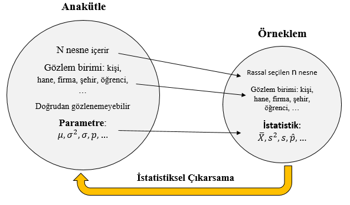
Şekil 3.1: Anakütleden örnekleme ve istatistiksel çıkarım süreci
Tanım 3.4 (İstatistik) Örneklemden hesaplanan ve anakütle parametrelerini tahmin etmek için kullanılan değerlere istatistik denir. İstatistikler, örneklem verilerinden elde edilen ve anakütle hakkında bilgi veren ölçümlerdir. Örneğin, bir şehirdeki rassal seçilmiş 1000 hanehalkının ortalama geliri, bir üniversitedeki 200 öğrencinin ortalama notu veya bir fabrikada üretilen 500 ürünün ortalama ağırlığı birer istatistiktir.
Parametre ile istatistik birbiriyle karıştırılmamalıdır. Parametre anakütleye ilişkin sabitlerdir ve genellikle pratikte bilinmezler. İstatistikler ise örnekleme ilişkin değerlerdir ve sabit değildir. Başka bir örneklem çektiğimizde istatistikler de değişir. İstatistikleri rassal (tesadüfi) değişken olarak düşünebiliriz.
Anakütlenin daha küçük bir temsili olarak düşünebileceğimiz örneklemi uygun yöntemlerle inceleyerek anakütle hakkında genellemeler ve çıkarımlar yapabiliriz. Temsili bir örneklem, anakütlenin özelliklerini doğru bir şekilde yansıtmalıdır. Örneklem ne kadar iyi seçilirse, anakütle hakkında o kadar güvenilir genellemeler yapılabilir. Yanlış veya eksik bir örneklem, yanıltıcı sonuçlara ve yanlış çıkarımlara yol açabilir.
Anakütleden örneklem almanın çok çeşitli yolları vardır. Başlıca örnekleme yöntemleri arasında basit rassal örnekleme, tabakalı örnekleme, ve sistematik örnekleme sayılabilir. Basit rassal örneklemede anakütledeki her birimin \(n\) boyutlu örneklemde olma olasılığı eşittir. Bir birimin örnekleme seçilmesi diğer brimlerin seçilmesini etkilemez. Ayrıca oluşturabileceğimiz \(n\) boyutlu tüm örneklemlerin seçilme olasılığı aynıdır. Anakütlenin bir listesi yapılabilirse örneklem birimleri bilgisayarda rassal sayı üreteçleri kullanılarak seçilebilir.
Tabakalı örneklemede, anakütle belirli özelliklere göre homojen alt gruplara (tabakalara) ayrılır ve her tabaka içinde rassal örneklemler çekilir. Örneğin, bir okulda öğrenci gruplarını sınıf düzeylerine göre (9. sınıf, 10. sınıf, vb.) ayırarak her sınıftan belirli sayıda öğrenci seçilerek anakütlenin daha iyi temsil edilmesi sağlanabilir.
Sistematik örnekleme birimleri düzenli aralıklarla seçer. \(N\) boyutlu bir listeden \(n\) elemanlı bir alt küme seçmek istiyorsak \(j=N/n\) olmak üzere, 1 ile j arasında rassal bir sayı ile başlarız. Daha sonra her j sırasındaki birimleri örnekleme dahil ederiz. Örneğin \(N=10000\) elemanlı bir listeden \(n=500\) elemanlı bir örneklem seçmek için ile \(j=10000/500=20\) arasında bir tamsayıyı tesadüfi olarak seçeriz. Bu sayı 10 olsun. Daha sonra buna \(j=20\) ekleriz ve 500’ü tamamlayana kadar seçime devam ederiz: 10, 30, 50, … vb.
Bunlara ek olarak başka örnekleme teknikleri de mevcuttur. Bu yöntemler, anakütlenin yapısına ve araştırmanın amacına bağlı olarak tercih edilebilir.
Bu bölümde inceleyeceğimiz araçlar veri kümesinin anakütle mi yoksa örneklem mi olduğuna göre değişebilir. Ancak çoğu kavram ve araç her iki veri türüne de uygulanabilir. Bazı kavram ve araçların tanımları anakütle ve örneklem için ayrı ayrı yapılmıştır.
Anakütle ya da örneklem verileri bilgisayarlarda çeşitli biçimlerde işlenebilir (vektör, liste, matris, veri çerçeveleri vb). Pratikte yaygın olarak bir spreadsheet formatında ya da R’ın veri çerçeveleri formatında saklayabiliriz. Bir veri çerçevesi yapı olarak spreadsheet formatına benzer. Satırlarda gözlem birimleri ve sütunlarda değişkenler yer alır. Hücrelerde ise gözlem değerleri bulunur. Örneğin tüm hanehalklarından oluşan bir anakütleden çekilmiş 2000 gözlemli bir rassal örneklem:
Bu veri kümesinde hanede yaşayan kişi sayısı, hanenin yıllık ve aylık geliri ve harcaması, tasarruf yapıp yapmadığı gibi çeşitli bilgiler bulunmaktadır.
Sütunlarda yer alan değişkenler gözlem birimlerine (hanehalklarına) ilişkin çeşitli bilgiler içerir. Hanehalkı bir adreste (konutta) yaşayan tüm bireylerden oluşan topluluk olarak tanımlanır. Yukarıdaki örnekte, birinci satırdaki 7373 numaralı hanehalkı 3 kişiden oluşmaktadır, yıllık geliri 61379 TL’dir ve tasarruf yapmaktadır. 2483 numaralı hanehalkı ise 6 kişiden oluşmaktadır, yıllık geliri 55287 TL’dir ve tasarruf yapmamaktadır.
Örneklem birimlerinden bilgi toplamanın en yaygın yöntemi anketlerdir. İktisatta ve diğer sosyal bilim alanlarında kullanılan verilerin önemli bir kısmı, anket ve araştırma sonuçlarına dayanmaktadır. Türkiye’de bu tür verilerin en önemli kaynaklarından biri Türkiye İstatistik Kurumu (TÜİK)’dur. TÜİK, hem makro hem de mikro düzeyde veri üretmek için düzenli aralıklarla çeşitli anketler ve araştırmalar gerçekleştirir. Mikro veriler, bireyler, hanehalkları veya firmalar gibi küçük birimlerin davranışlarını anlamak için kullanılır ve iktisadi analizlerde yaygın olarak kullanılır.
TÜİK’in iktisatta sıkça kullanılan mikro verileri topladığı başlıca anketler ve veri kümeleri şunlardır:
Hanehalkı İşgücü Araştırması (HİA): Türkiye’de işgücü piyasasına ilişkin istatistikleri üretmek amacıyla yapılan bu anket, işgücü, istihdam, işsizlik ve işgücüne katılım gibi temel göstergeleri sağlar.
Hanehalkı Bütçe Araştırması (HBA): Hanehalklarının gelir, tüketim ve harcama alışkanlıklarını ölçmek için yapılan bu anket, gelir dağılımı, yoksulluk ve tüketim eğilimleri gibi önemli konularda veri sunar. Hanehalkı tüketim sepeti ve ağırlıkları HBA ile belirlenir ve tüketici fiyat endeksinin hesaplanmasında kullanılır.
Gelir ve Yaşam Koşulları Araştırması (GYKA): Hanehalklarının gelir kaynakları, yaşam standartları ve yoksulluk durumlarına ilişkin bilgi sağlayan bu anket, gelir eşitsizliği, sosyal hareketlilik ve refah düzeyini ölçmeye yönelik detaylı veriler içerir.
Sanayi ve Hizmet İstatistikleri: Türkiye’deki firmaların üretim, istihdam, yatırım ve yenilikçilik faaliyetlerini ölçen bu araştırmalar, firma düzeyinde iktisadi analizler için değerli mikro veriler sağlar. Özellikle iktisadi büyüme, verimlilik analizleri ve sanayi dinamikleri üzerine yapılan çalışmalarda sıkça kullanılır.
Şekil 3.2: İstatistiki Bölge Birimleri Sınıflaması (İBBS) Düzey 2 bölgeleri
Anakütle tüm Türkiye’yi kapsamaktadır. Gözlem birimi ya da örnekleme birimi adrestir. TÜİK HİA’da 26 İBBS2 bölgesini ve Türkiye’yi temsil edecek şekilde tabakalı örnekleme yöntemini uygulamaktadır. Adrese Dayalı Nüfus Kayıt Sistemi (ADNKS) üzerinden elde edilen adreslerde yaşayan bireylerle yüzyüze ve telefon ile anketler yapılır. Toplanan demografik ve işgücü piyasası verilerinden hareketle çeşitli istatistikler hesaplanır.
İşsizlik oranı \[
\frac{\mbox{işsizlerin sayısı}}{\mbox{işgücü}}\times 100
\] olarak tanımlanır. Bir birey bir işte çalışmıyorsa, son dört hafta içerisinde aktif olarak iş arıyorsa ve iş bulduğu takdirde 2 hafta içinde işbaşı yapabilecek durumda ise işsiz olarak sınıflandırılır. İşgücü, “emek arzında bulunan çalışma çağındaki” yani 15 ve yukarı yaştaki nüfusu kapsar. Şekil 3.3 HIA anketinde bu bilgilerle ilişkisi soruları göstermektedir (kaynak: İşgücü İstatistikleri Mikro Veri seti, TÜİK yayın no 4738, 2023).
Şekil 3.3: Hanehalkı İşgücü Araştırması örnek anket soruları (Kaynak: TÜİK)
2023 yılında 15-64 yaş arası Türkiye geneli için işsizlik oranı %9.6 olarak tahmin edilmiştir. Şekil 3.4 26 bölge için işsizlik oranlarını harita üzerinde göstermektedir.
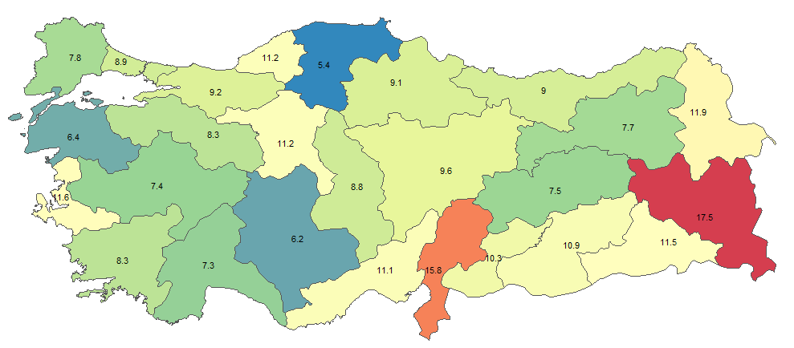
Şekil 3.4: İBBS2 düzeyinde işsizlik oranları
3.2 Veri Türleri
Veriler araştırma türüne göre deneysel veya gözlemsel olabilir. Verilerin toplanma biçimine ve zamanın nasıl ele alındığına göre de sınıflandırılabilir.
3.2.1 Deneysel Veriler
Deneysel veriler, araştırmacının bir veya daha fazla değişkeni kontrol ederek, bu değişkenlerin diğer değişkenler üzerindeki etkilerini gözlemlediği çalışmalardan elde edilir. Deneysel araştırmalarda temel amaç, belirli bir müdahalenin (örneğin yeni bir eğitim modelinin) bir hedef değişken ya da sonuç (örneğin sınav performansı) üzerindeki nedensel etkisini test etmektir.
Deney süreci kabaca aşağıdaki adımlardan oluşur:
Hipotez geliştirme: Araştırmacı, deney tasarımına teorik modellerden veya önceki bilimsel çalışmalardan hareketle oluşturulan bir hipotezle başlar. Bu hipotez, bir veya daha fazla bağımsız değişkenin (müdahale edilen faktör) hedef değişken (sonuç) üzerindeki etkilerine ilişkin sınanabilir bir önermedir. Örneğin, bir eğitimci yeni bir eğitim tekniğinin ilköğretim düzeyindeki öğrencilerin akademik performansları üzerindeki etkisine ilişkin bir hipotez oluşturur. Bu hipotez yeni tekniğin etkisiz olduğunu söyleyebilir.
Grupların belirlenmesi: Araştırma katılımcıları (denekler), genellikle ilgili anakütleden rastgele olarak, kontrol grubu ve deney grubu olmak üzere ikiye ayrılır. Kontrol grubu, müdahaleye maruz kalmazken, deney grubu müdahaleyi alır. Anakütleden tesadüfi örnekleme ile çekildiği varsayımı altında kontrol ve deney grupları her açıdan birbirine benzer olacaktır. Böylece hedef değişkende meydana gelen değişimler müdahaleye (tedaviye) atfedilebilir ve nedensel etki ölçülebilir.
Müdahale (tedavi/manipülasyon): Tedavi ya da müdahaleden önce hedef değişken ölçümleri (örneğin öğrenci performansı) her iki grup için yapılır. Daha sonra deney grubuna müdahale edilir, yani araştırmacı bağımsız değişkeni değiştirir (örneğin, yeni bir eğitim yöntemi uygulamak). Kontrol grubu karşılaştırma amacıyla tedavi ya da müdahaleden etkilenmez.
Veri toplama: Müdahaleden sonra, hedef değişken üzerindeki etkiler ölçülür (örneğin, sınav sonuçları) ve her iki grup için kaydedilir.
Sonuçların analizi: Müdahalenin etkilerini değerlendirmek için istatistiksel analizler yapılır ve hipotez test edilir. Eğer gerçekten tedavinin bir etkisi varsa, kontrol ve deney grupları arasında anlamlı bir fark oluşacaktır. Eğitim örneğimizde katılımcıların diğer özelliklerinin sabit kaldığı varsayımı altında deney grubunda ortalama performanstaki bir artış yeni programın etkisi olarak yorumlanabilir.
Bu derste istatistiksel çıkarsama başlığı altında, iki grup arasında ortalamada fark olup olmadığını nasıl sınayacağımızı öğreneceğiz.
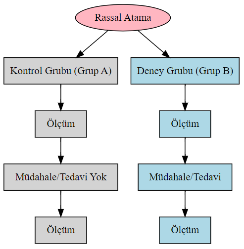
Şekil 3.5: Deneysel veri süreci: rassal atama ile deney ve kontrol grupları
Örnek 3.2 (A/B Testing) A/B testi, özellikle dijital ortamda iki veya daha fazla seçeneğin (versiyonun) performansını karşılaştırmak için kullanılan basit ama güçlü bir deneysel tasarım yöntemidir. Bu yöntemde anakütle rassal olarak iki gruba ayrılır: bir grup “A” (kontrol grubu) ve diğer grup “B” (deney grubu). A grubu mevcut durumu, B grubu ise değiştirilen bir unsuru (fiyat, tasarım, ürün özellikleri vb.) deneyimler. Daha sonra iki grubun performansı karşılaştırılarak hangisinin daha etkili olduğu belirlenir. Bu testler, özellikle pazarlama, ürün geliştirme ve kullanıcı deneyimi iyileştirmelerinde yaygın olarak kullanılır.
A/B testleri dijital ortamda oldukça kullanışlıdır çünkü büyük veri kümelerine hızlıca erişilebilir ve sonuçlar kısa sürede analiz edilebilir. Web siteleri, uygulamalar, reklam kampanyaları ve dijital ürünlerin performansını iyileştirmek için A/B testleri sıkça tercih edilir. Şirketler, ürünlerinin fiyatını optimize etmek için farklı fiyat noktalarının nasıl bir performans gösterdiğini görmek amacıyla A/B testlerinden faydalanabilirler. Özellikle dijital ürünlerde, hızlı bir şekilde farklı fiyat stratejileri deneyip sonuçlarını analiz etmek mümkündür.
Örneğin, bir dijital ürün sağlayıcısının (bir müzik veya video akış platformunun) yeni bir premium üyelik fiyatlandırmasını test ettiğini düşünelim. Şirket, premium üyelik ücretini artırarak gelirini artırmayı hedefliyor, ancak bu fiyat artışının müşteri kaybına yol açıp açmayacağını öğrenmek istiyor. Bu durumda A/B testi şöyle uygulanabilir:
A Grubu (Kontrol Grubu): Mevcut fiyat 10 TL olarak belirlenmiştir ve bu grup, bu fiyat üzerinden üyelik almayı sürdürür.
B Grubu (Deney Grubu): Fiyat 15 TL’ye yükseltilir ve bu gruba, üyelik alırken 15 TL’lik fiyat sunulur.
Belirli bir süre sonra, her iki grubun davranışları analiz edilir. Örneğin, A grubu üyelerinin kaç tanesi üyeliklerini sürdürmüş veya yeni üyelik almış, B grubunun kaç üyesi daha yüksek fiyat karşısında üyeliğini sürdürmüş ya da iptal etmiş gibi metrikler incelenir. Bu metrikler arasında en önemlisi, grupların elde ettiği toplam gelir ve müşteri kayıp oranıdır. Bu basit A/B testi ile şirket, müşteri davranışlarına dayalı en uygun fiyatı belirleyebilir. Ayrıca, bu testleri farklı segmentler için (örneğin, farklı yaş grupları veya bölgeler) tekrar ederek daha ayrıntılı fiyatlandırma stratejileri geliştirebilir.
3.2.2 Gözlemsel Veriler
Gözlemsel veriler, araştırmacının herhangi bir müdahalede bulunmadığı, doğal süreçlerin izlendiği verilerden oluşur. Gözlemsel verilerin deneysel verilerden en önemli farkı araştırmacının deney ve kontrol gruplarını rassal bir şekilde oluşturamamasıdır. Gözlemsel veriler genellikle anket çalışmaları ve idari kayıtlardan elde edilen verilerdir. Bu tür araştırmalar, bazı özel durumlar dışında, nedensellik yerine değişkenler arasındaki ilişkileri incelemek için yapılır.
Gözlemsel verilerle yapılan çalışmalar, kontrol edilemeyen dış faktörlerin bulunabileceği ve bu nedenle nedensellikten ziyade korelasyonun ortaya çıkabileceği türden çalışmalardır. Örneğin gelir düzeyi ile eğitim seviyesi arasındaki ilişkiyi inceleyen bir araştırmacı, bireylerin eğitim düzeylerini değiştiremez; sadece mevcut veriler üzerinden gözlem yapar.
Açıkça deney yapılmasa da, bazı kısıtlayıcı varsayımlar altında, gözlemsel veriler kullanılarak nedensel çıkarım yapılması mümkündür. Deney-benzeri veriler (quasi-experimental data) deney ve kontrol gruplarının kendiliğinden oluştuğu gözlemsel verilerdir. Örneğin, birbirine çok benzer iki şehirden biri belirli bir tarihte çok sayıda göç almış olsun. Göç alan şehir (deney grubu) göç almayan şehirle (kontrol grubu) karşılaştırılabilir; örneğin göçün istihdam ya da fiyatlar üzerindeki etkisi incelenebilir. Rassal atama yapılmadığı için (göç kendiliğnden oluşuyor) bu tür verilerden nedensel çıkarım yapılabilmesi için bazı özel varsayımların yapıldığı ileri düzey ekonometrik tekniklere ihtiyaç duyulur.
3.2.3 Veri Organizasyonuna Göre
Veriler ölçüm ve toplanma biçimine, ve zamanın niteliğine göre dört farklı başlık altında toplanabilir:
Yatay kesit veri (Cross-sectional data): Belirli bir zaman diliminde, birden fazla birimden (birey, hanehalkı, firma, şehir, vb.) toplanan verileri ifade eder. Yatay kesit verilerin kaynağı çoğunlukla idari kayıtlar ya da bilimsel anketlerdir. Bu anketleri araştırmacı kendi tasarlayacağı gibi diğer kurum ve kuruluşlar tarafından da hazırlanabilir. Örneğin, TÜİK tarafından her yıl yapılan hanehalkı ve fert araştırmaları (HHBA, HIA, vb) bir anket sonucunda farklı kişilere ait yaş, gelir ve eğitim düzeyi gibi bilgiler içerir. Gelir İdaresi Başkanlığı tarafından belirli bir yılda vergi mükelleflerinin bilanço ve gelir tablosu gibi finansal raporlarından oluşturulan idari kayıtlar da yatay kesit veri kümesi oluşturur.
Zaman serisi (Time series data): Aynı birimden, birbirini düzenli biçimde takip eden belirli zaman dilimlerinde alınan verileri ifade eder. Doğal olarak verilerin bir zaman sırası (kronoloji) vardır ve bu değiştirilemez. Örneğin, bir ülkenin yıllık GSYİH değerleri, aylık enflasyon oranları, bir finansal varlığın günlük değerleri ve getirileri zaman serisi verisidir. Bu veri türü özellikle finans ve makroiktisat alanlarında geliştirilen teori ve hipotezlerin değerlendirilmesinde, geleceğe dönük öngörü yapılmasında, zaman içerisindeki eğilimlerin ve dalgalanmaların analizinde kullanılır.
Zaman serilerini görselleştirmenin en kolay yolu x ekseninde zamanın ve y ekseninde ölçümlerin olduğu çizgi grafiğidir. Şekil 3.6 BIST 100 endeksinin 02/01/2003-29/09/2021 dönemine ait günlük kapanış değerlerini göstermektedir.
Şekil 3.6: BIST100 endeksi günlük kapanış değerleri
Birleştirilmiş yatay kesit (Pooled cross-sectional data): Farklı zaman dilimlerinde toplanmış yatay kesit verilerinin birleştirilmesiyle oluşturulan veri kümesidir. İki boyutludur; hem zaman hem de yatay kesite ilişkin bilgi içerir ancak yatay kesit birimleri takip edilmez. Bu tür veriler, farklı dönemlerdeki birimlerin özelliklerini inceleme imkanı sunar. Örneğin, TÜİK hanehalkı bütçe anketleri her yıl ilgili anakütleden rassal örnekleme yöntemiyle farklı birimlerden veri toplar. Bu farklı hanelerden oluşan yatay kesit verileri bir araya getirerek birleştirilmiş yatay kesit veri kümesi elde edebiliriz. Böylece hanehalkı tüketiminin zaman içindeki eğilimini inceleyebiliriz.
Panel veri (Panel or longitudinal data): Aynı birimlerin belirli zaman dilimlerinde gözlemlenmesiyle oluşturulan veri kümesidir. Örneğin, belirli bir grup bireyin yıllık gelir düzeyleri üzerinde yapılan bir araştırma panel veri olarak kabul edilir. Bir sektördeki firmaların zaman içindeki yatırım kararları ve buna ilişkin değişkenler bir panel veri kümesi oluşturur. Bu tür iki boyutlu veri, hem zaman içindeki değişimleri hem de birimler arası ilişkileri analiz etme olanağı sağlar.
Örnek 3.4 Panel veriye bir örnek olarak ülkelerarası Gapminder verisi gösterilebilir. Bu veri kümesinde, ülkelerin 5 yıllık dönemlerdeki yaşam beklentisi, nüfus, kişi başına düşen gayri safi yurt içi hasıla (GSYİH) gibi değişkenler yer alır. Bu verilerle ülkelerin yıllar boyunca gelişimini izlemek mümkündür.
# install.packages("gapminder") # önceden yüklenmelilibrary(gapminder)head(gapminder)
# A tibble: 6 × 6
country continent year lifeExp pop gdpPercap
<fct> <fct> <int> <dbl> <int> <dbl>
1 Afghanistan Asia 1952 28.8 8425333 779.
2 Afghanistan Asia 1957 30.3 9240934 821.
3 Afghanistan Asia 1962 32.0 10267083 853.
4 Afghanistan Asia 1967 34.0 11537966 836.
5 Afghanistan Asia 1972 36.1 13079460 740.
6 Afghanistan Asia 1977 38.4 14880372 786.
Yukarıda bu veri kümesinin ilk 6 satırı yazdırılmıştır. Zaman boyutu year, birim boyutu country ile temsil edilmiştir. Ülkelerin her 5 yıllık dönem için bir gözlemi vardır (her değişken için). Birleşik veri yapısından görüldüğü gibi hem zaman hem de yatay kesit boyutunu bir arada içerir. Böylece hem zaman içindeki değişimi hem de birimler arasındaki ilişkileri inceleyebiliriz.
Şekil 3.7: Bir panel veri örneği: Avrupa Ülkelerinde Kişi Başına Düşen GSYİH (1952-2007) (kaynak: Gapminder)
Şekil 3.7 Gapminder panel veri kümesinde yer alan Avrupa ülkelerinin kişi başına GSYİH grafiğini göstermektedir. Panel veri bize zamansal değişimleri ve birimlerin arasındaki ilişkileri gözlemleme fırsatı sunar. Şekil 3.7 tüm ülkeleri arkaplanda gösterirken, sadece Türkiye’yi öne çıkarıyor. Böylece, Türkiye’yi diğer Avrupa ülkelerinin kişi başına düşen GSYİH verileri arasında açık bir şekilde görebiliyoruz.
3.3 Nicel Değişkenler
Betimsel analizde karşılaşılan değişkenler farklı özelliklere ve ölçüm düzeylerine sahip olabilir. Değişkenleri genel olarak nicel (kantitatif) ve nitel (kalitatif) olmak üzere ikiye ayırabiliriz. Nicel değişkenler kendi içinde aralık değişkenleri ve oransal değişkenler olmak üzere ikiye ayrılır.
3.3.1 Aralık Ölçeği
Aralık (interval) değişkenleri, ölçülen değerler arasındaki “aralığın” veya “farkın” anlamlı olduğu değişkenlerdir. Bu tür değişkenler, sıralı bir şekilde düzenlenebilir ve aralarındaki farklar sabit ve anlamlıdır.
Aralık değişkenlerinin en önemli özelliklerinden biri, sıfır noktasının keyfi veya anlamsız olmasıdır. Yani, sıfır değeri mutlak bir sıfırı (yokluk, hiçlik) temsil etmez. Örneğin, sıcaklık ölçümleri (Celsius veya Fahrenheit) bir aralık değişkenidir; burada sıfır derece sıcaklığın yokluğunu ifade etmez.
Aralık değişkenleri üzerinde toplama ve çıkarma işlemleri anlamlıdır, ancak çarpma ve bölme işlemleri genellikle anlamlı değildir. Bu, sıfır noktasının keyfi olmasından kaynaklanır.
1950-2023 döneminde bazı illerdeki ortalama sıcaklar şöyledir:
# Bazı illerin yıllık ortalama sıcaklıkları, Celsius derece# 1950-2023 dönem ortalamasıtempC <-data.frame(il =c("İstanbul", "Ankara", "İzmir", "Ardahan"), ort_sicaklik =c(15.3, 12, 18, 3.7))tempC
il ort_sicaklik
1 İstanbul 15.3
2 Ankara 12.0
3 İzmir 18.0
4 Ardahan 3.7
Yıllık sıcaklık ortalamalarına göre bu dört bölge arasında en sıcak il İzmir, en soğuk il ise Ardahan’dır. Ancak buradan hareketle İzmir’in Ardahan’dan yaklaşık 5 kat daha sıcak olduğunu söyleyemeyiz.
Sıfır noktasının keyfiliğini görmenin bir yolu Celsius-Fahrenheit dönüştürmesi yapmaktır. Celsius \(^{\circ}C\) ile Fahrenheit cinsinden sıcaklık arasındaki ilişki aşağıda verilmiştir: \[
F = 1.8~C+32
\] Buna göre santigrat cinsinden 0 noktası Fahrenheit cinsinden 32 \(^{\circ}F\) dereceye karşılık gelir. Bu yeni değişkeni veri çerçevesine ekleyelim:
il ort_sicaklik Fahrenheit
1 İstanbul 15.3 59.54
2 Ankara 12.0 53.60
3 İzmir 18.0 64.40
4 Ardahan 3.7 38.66
Suyun donma noktası keyfi olarak tanımlandığı için değerlerin birbirlerine oranları alınmaz. Aralıklar ise anlamlı bir biçimde yorumlanabilir. Her iki sıcaklık derecesi cinsinden 0 noktasının sıcaklığın olmadığı anlamına gelmediğine dikkat ediniz.
3.3.2 Oransal Ölçek
Oransal (ratio) değişkenler, hem aralıkların hem de oranların anlamlı olduğu nicel değişkenlerdir. Oransal ölçekli değişkenler anlamlı bir şekilde sıralanabilir, aralarındaki farklar ve oranlar yorumlanabilir. Oransal değişkenlerin en belirgin özelliği, mutlak sıfır noktasına sahip olmalarıdır. Bu, sıfır değerinin tam bir yokluk veya var olmama durumunu ifade ettiği anlamına gelir. Örneğin, ağırlık ve uzunluk ölçümleri oransal değişkenlere örnektir; sıfır ağırlık ya da sıfır uzunluk, hiçbir şeyin olmadığını gösterir.
Oransal değişkenler üzerinde tüm aritmetik işlemler (toplama, çıkarma, çarpma, bölme) anlamlıdır. Bu özellik, bu tür değişkenlerin analizinde daha geniş bir esneklik sağlar. İktisat, işletme, finans, ve sosyal bilim alanlarındaki bir çok değişken bu sınıfa girer. Örneğin hanelerin aylık gelir ve harcamaları oransal değişkenlerdir.
Buna göre ilk hane aylık ortalama gelirinin yaklaşık %58’ini harcamaktadır. 3699 nolu hane ise gelirinden daha fazlasını harcamaktadır (yaklaşık %27 daha fazla). Her iki değişken için 0 değeri mutlak yokluğu ifade etmektedir. Ancak veri kümesinde bazı gözlemlerde tam olarak 0 değerini almaları gerekmez. Bu örneklemde aylık ortalama gelir ve harcaması 0 olan bir hane yoktur.
3.4 Nitel Değişkenler
Nitel (kalitatif) değişkenler nominal ve ordinal olmak üzere iki gruba ayrılır.
3.4.1 Nominal ölçek
Nominal değişkenler, sıralama veya hiyerarşi içermeyen kategorik değişkenlerdir. Bu değişken türü, etiketler veya isimler kullanarak verileri kategorize eder. Örneğin, cinsiyet, kan grubu, medeni durum gibi değişkenler nominal ölçeklidir.
Hanehalkı harcama örnekleminde tasarruf değişkeni bu gruba girer:
Bu örneklemde tasarruf değişkeni iki karakterden oluşan değerler alır: hane tasarruf yapıyorsa “Evet”, yapmıyorsa “Hayır”.
table(hane_ornek$tasarruf)
Evet Hayır
520 1480
Buna göre 520 hane tasarruf yapabiliyorken 1480 hane tasarruf yapmamaktadır.
Veri kümelerinde bazı durumlarda nominal (kategorik) değişkenlere sayısal değerler atanabilir. Bu durum, özellikle veri analizi ve modelleme süreçlerinde dikkat edilmesi gereken önemli bir konudur. Nominal değişkenlerin sayısal değerler alması, yanlış analiz sonuçlarına yol açabilir. Bu nedenle, aşağıdaki noktalara dikkat edilmelidir:
Nominal Değişkenlerin Tanımı: Nominal değişkenler, belirli kategorilere ayrılmış veriler olup, bu kategoriler arasında herhangi bir sıralama veya sayısal ilişki yoktur. Örneğin: cinsiyet (Erkek = 1, Kadın = 2) veya renk (Kırmızı = 1, Mavi = 2, Yeşil = 3).
Sayısal Değerlerin Yanlış Yorumu: Nominal değişkenlere atanan sayısal değerler, sayısal işlemler için kullanılmamalıdır. Örneğin, “Erkek” ve “Kadın” için 1 ve 2 sayılarının atanması, bu sayıların arasında bir büyüklük veya sıralama ilişkisi olduğu anlamına gelmez.
Kategorik Verileri Kodlama: Kategorik verilerin sayısal modellere dahil edilmesi gerektiğinde, genellikle ikili (binary) temsil (“one-hot encoding”, “dummy variable”) gibi yöntemler kullanılır. Bu yöntemler, her kategoriyi ayrı bir ikili (0/1) değişken olarak temsil eder.
Örneğin hanehalkı veri kümesinde sigara değişkeni hanede sigara içen olup olmadığına ilişkin bilgi vermektedir:
Bu değişken hanede sigara içen biri varsa 1, yoksa 2 değerini alan nominal bir değişkendir. Sigara’yı ikili (0/1) değişken biçiminde yeniden kodlayabiliriz:
# "sigara" sütununu kategorik değişken olarak tanımlamahane_sigara$sigara_faktor <-factor(hane_sigara$sigara, levels =c(1, 2), labels =c("Evet", "Hayır") )# kukla değişken olarak tanımla sigara_kukla <-model.matrix(~ sigara_faktor -1, data = hane_sigara)cbind(hane_sigara, sigara_kukla)
sigara_faktorEvet sigara içenlerin olduğu bir hanede 1, diğerlerinde 0 değerini almaktadır. sigara_faktorHayır ise sigara içilmeyen hanelerde 1, diğerlerinde ise 0 değerini almaktadır.
3.4.2 Ordinal ölçek
Ordinal değişkenler, sıralama veya derecelendirme içeren kategorik değişkenlerdir. Bu tür değişkenlerde, kategoriler arasında bir sıra veya hiyerarşi vardır. Ordinal değişkenler, sıralanabilir kategoriler içerir. Kategoriler arasındaki farklar sabit veya standart değildir. Örnek olarak, eğitim seviyesi, memnuniyet dereceleri, ürün kalite dereceleri verilebilir.
Örneğin memnuniyet bir ürünün değerlendirmesine ilişkin 6 gözlem içeren bir faktör değişkenidir:
[1] Düşük Orta Yüksek Orta Orta Yüksek
Levels: Düşük < Orta < Yüksek
Hane verilerinde yer alan saglik_merkezi_erisim ve zor_egitim_erisim değişkenleri sıralı kategorik değişkenlerdir:
veri <- hane_ornek[1:10,c("saglik_merkezi_erisim", "saglik_merkezi_erisim_olcek")]veri
# A tibble: 10 × 2
saglik_merkezi_erisim saglik_merkezi_erisim_olcek
<dbl> <chr>
1 5 Çok zor
2 2 Kolay
3 1 Çok kolay
4 2 Kolay
5 2 Kolay
6 2 Kolay
7 2 Kolay
8 2 Kolay
9 1 Çok kolay
10 2 Kolay
Hanenin bulunduğu yerden sağlık merkezlerine erişimin kolaylığına ilişkin bilgi içeren bu değişken 5 seviyeden oluşur. Bu seviyeler 1-5 arasında sayısal değerlerle ifade edilmiştir. Buna göre 1 (Çok kolay), 2 (Kolay), 3 (Orta), 4 (Zor) ve 5 (Çok zor). saglik_merkezi_erisim_olcek bu bilgileri karakter formatında içerir. İstenirse bu değişken faktör değişkeni olarak da tanımlanabilir.
3.5 Görsel özet araçlar
Bu ve izleyen alt bölümlerde inceleyeceğimiz görsel yöntemler karmaşık sayı yığınlarının anlaşılmasında genellikle ilk adımdır. Bu görsel araçlar, sayısal özet bilgilerin yanı sıra verilerdeki eğilimleri, dağılımları ve ilişkileri daha açık bir şekilde ortaya koyar. Görsel araçlar, verilerin ardındaki hikayeyi anlatmada güçlü bir araç olarak işlev görür. Örneğin, bir histogram, verinin dağılımını etkili bir şekilde gösterirken, çubuk çizimi kategorik verilerin nasıl dağıldığına ilişkin bilgi sunar.
Verilerin görselleştirilmesinde değişkenin türüne göre uygun araçların seçilmesi gerekir. Kategorik değişkenler için frekans tabloları, çubuk çizimleri, pasta çizimi gibi araçlar uygundur. Sürekli değişkenler için ise histogram, dal-yaprak çizim, kutu çizimi gibi araçlar kullanılabilir.
3.5.1 Frekans tabloları ve kategorik değişkenler
Kategorik değişkenlerin gözlem kümesindeki sayısını ve oranını (yüzde) kolayca hesaplayarak bir tablo haline getirebilir ve görselleştirebiliriz. Kategorik (nominal ya da ordinal) değişkenlerin veri kümesindeki sıklığını ya da frekansını hesaplamak için R’da table() ve prop.table(table()) fonksiyonları kullanılabilir.
Örneğin, hanelerde sigara içenlerin sayısını ve oranını bulmak istediğimizi düşünelim. hane_ornek.RData verisinden hareketle
bulunur. Hanelerin yaklaşık % 51.8’inde (1036 hane) sigara içilmektedir (kategori = 1). Yaklaşık %48.2 hanede ise (964 hane) sigara içilmemektedir (kategori = 2).
Kategorik değişkenlerin frekansları çeşitli araçlarla görselleştirilebilir. Bunlardan biri çubuk çizimidir (barplot). Örneğin, sağlık merkezlerine erişim kolaylığını hanelerin nasıl değerlendirdiğini özetlemek istiyorsak, her kategorinin sıklığını gösteren bir tablo ve çubuk çizimi oluşturabiliriz:
Şekil 3.8: Çubuk çizimi: sağlık merkezine erişimin kolaylığı
Şekil 3.8 hanelerin sağlık merkezlerine erişim kolaylığına ilişkin 1-5 skalasında verdikleri cevapların çubuk çizimini göstermektedir. Bu grafiği sıklığa göre büyükten küçüğe sıralayarak çizebiliriz. Şekil 3.9 bu grafiği göstermektedir.
# çubuk çizimi barplot(frekans_tablosu, # sıklık tablosuylim =c(0,1000) # y ekseninin sınırları )text(x =barplot(frekans_tablosu, plot=FALSE), y = frekans_tablosu, label =paste0(round(frekans_tablosu_yuzde, 1), "%"), pos =1, cex =0.8, col ="black")
Şekil 3.9: Sıralanmış çubuk çizimi: sağlık merkezine erişimin kolaylığı
Buna göre hanelerin %49.1’i sağlık merkezlerine ulaşımın kolay olduğunu düşünmektedir. Sağlık merkezlerine erişimin zor olduğunu düşünen hanelerin oranı %19.4, çok zor olduğunu söyleyen hanelerin oranı ise %7.5’tir.
Uygulamalarda yaygın olarak kullanılan başka bir grafik türü pasta grafiğidir. Şekil 3.10pie() fonksiyonu ile çizilmiş örnek bir pasta grafiğini göstermektedir.
pie(frekans_tablosu, col = blues9)
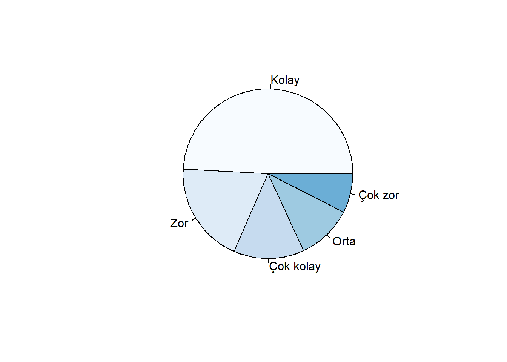
Şekil 3.10: Pasta grafiği: sağlık merkezine erişimin kolaylığı
Belirli bir aralıkta herhangi bir değeri alabilen sayısal değişkenleri görselleştirmenin bir çok yöntemi mevcuttur. İzleyen alt bölümlerde bunları ele alacağız.
Frekans (sıklık) tablosu özellikle büyük boyutlu sayısal verilerin yorumlanmasında yardımcı olabilir. Bunun için veriler az sayıda gruplara (sınıflara) ayrılır ve her bir sınıfa kaç gözlem düştüğü yani sıklığı (frekansı) hesaplanır. Bu sıklıklar yüzde olarak da ifade edilebilir.
Örnek 3.5 Bir eğitim seminerine katılanların yaşları kaydedilmiştir: \[
x=(22, 24, 27, 28, 30, 32, 35, 37, 40, 46).
\] Bu veriyi birbirine eşit 4 parçaya ayıralım. Birinci grup: 15-25 yaş grubu 15 yaşında ya da daha büyük ve 25 yaşından küçük bireyleri kapsar. İkinci grup 25-35 yaş grubudur ve 25 (dahil) ile 35 (hariç) yaşları arasındaki bireyleri kapsar. Tablo 3.1 bu yaş verilerinin sıklık tablosunu göstermektedir.
Tablo 3.1: Katılımcıların yaş dağılımı
Sınıf
Sıklık (frekans)
Yüzde Sıklık
Birikimli sıklık
% Birikimli sıklık
15-25
2
% 20
2
% 20
25-35
4
% 40
6
% 60
35-45
3
% 30
9
% 90
45-55
1
% 10
10
% 100
Frekans tablosuna (Tablo 3.1) göre 2 gözlem, yani verilerin % 20’si 15-25 aralığında değerler almaktadır. Verilerin % 40’ı 25-35, % 30’u ise 35-45 aralığındadır.
yas <-c(22, 24, 27, 28, 30, 32, 35, 37, 40, 46)yas_grup <-cut(yas, breaks =c(15, 25, 35, 45,55), right =FALSE# sağ sınır dahil değil )# Gruplanmış yaş verisindeki frekansları hesaplayalımfrekanslar <-table(yas_grup)print(frekanslar)
stripchart() fonksiyonunu kullanarak verilerin basit bir görsel özetini oluşturun.
Gözlemleri 5 sınıfa bölün ve frekans tablosunu hazırlayın. X ekseninde sınıflar Y ekseninde sınıf içindeki gözlemler olmak üzere bir çubuk çizimi hazırlayın.
Çözüm
Şekil 3.11 beygir gücü verisinin nokta grafiğini göstermektedir.
# Verilerin basit bir görsel özetini stripchart() kullanarak oluşturstripchart(beygir_gucu, method ="stack", main =" ", xlab ="Beygir Gücü", col ="blue", pch =16)
Şekil 3.11: Nokta grafiği: otomobillerin beygir gücü
# Beygir gücü verilerini 5 sınıfa bölmek için sınıf aralıklarını belirlebreaks <-seq(min(beygir_gucu), max(beygir_gucu), length.out =6)print(breaks)
[1] 52.0 108.6 165.2 221.8 278.4 335.0
Bu sınır noktalarını kullanarak frekans tablosunu oluşturalım:
# Sınıf aralıklarına göre verileri sınıflandırbeygir_gucu_cut <-cut(beygir_gucu, breaks = breaks, include.lowest =TRUE, # en alt sınırı dahil etright =FALSE# sağ sınır hariç )# Frekans tablosunu oluşturfreq_table <-table(beygir_gucu_cut)freq_table
\([52,109)\) aralığında (52 dahil, 109 hariç) 10 gözlem, \([109, 165)\) aralığında (109 dahil, 165 hariç) 9 gözlem bulunmaktadır. Şekil 3.12 bu frekans tablosunun çubuk çizimini göstermektedir.
# Frekans tablosunu çubuk grafiği olarak çizbarplot(freq_table, main =" ", xlab ="Beygir Gücü Sınıfları", ylab ="Frekans", col ="lightblue", space=0,border ="black")
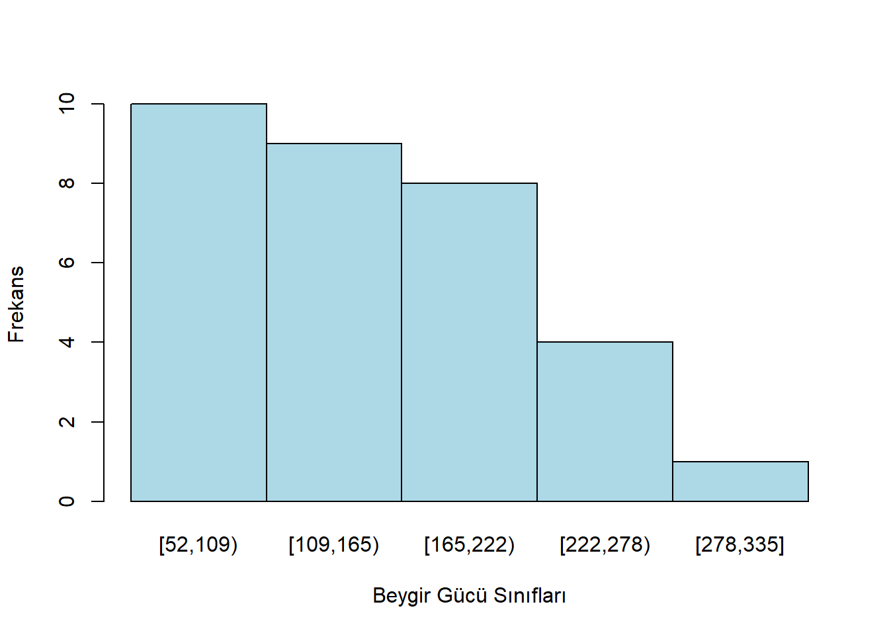
Şekil 3.12: Beygir gücü frekans dağılımı: çubuk çizimi
Aralıklar x ekseninde ve frekanslar y ekseninde olacak şekilde çubuk yerine nokta ile de gösterebiliriz (bkz. Şekil 3.13):
# Sınıf isimlerini alclasses <-names(freq_table)# Çubuk grafiği yerine noktalar ve dikey çizgiler kullanarak grafiği çizplot(as.numeric(freq_table), type ="p", main ="",xlab ="Beygir Gücü Sınıfları", ylab ="Frekans",col ="blue", pch =19, xaxt ="n", ylim =c(0,12))# Dikey çizgiler eklesegments(x0 =1:length(freq_table), y0 =0, x1 =1:length(freq_table), y1 = freq_table, col ="lightblue", lty ="dashed")# X ekseni etiketlerini ekleaxis(1, at =1:length(classes), labels = classes)# Frekans sayılarını noktaların üzerine yerleştirtext(x =1:length(freq_table), y = freq_table, label = freq_table, pos =3, cex =0.8, col ="black")
Şekil 3.13: Beygir gücü frekans dağılımı
Sınıf sayısının ve genişliğinin frekans dağılımını doğrudan etkilediğine dikkat ediniz. Bu grafiğin özel bir versiyonu histogram adını alır. İzleyen bölümlerde bu grafik türünü inceleyeceğiz.
3.5.2 Çapraz Tablolar
Bir çapraz tablo iki nominal ya da ordinal değişkenin sıklıklarını gösterir. Eğer A değişkeni \(r\) grup, B değişkeni \(c\) grup içeriyorsa çapraz tablo \(r\times c\) hücreden oluşur. Her hücre o gruplara karşılık gelen gözlem sayısını içerir.
Örnek 3.7 Hanehalkı örnekleminde aylık geliri kullanarak yeni bir kategorik değişken oluşturalım. Aylık geliri 1883 TL’den düşük olanlar “Düşük Gelir”, 1883-4230 arasında olanlar “Orta gelir” ve 4230 TL’den yüksek olanlar “Yüksek Gelir” olsun.
Düşük Orta Yüksek
Evet 215 503 318
Hayır 284 441 239
Tablo 3.2: Gelir düzeyi ve sigara kullanımı
Düşük
Orta
Yüksek
Toplam
Evet
215
503
318
1036
Hayır
284
441
239
964
Toplam
499
944
557
2000
Tablo 3.2 çapraz tabloyu göstermektedir. Toplam 2000 hane içinde 215’i düşük gelir grubundadır ve hanede sigara içilmektedir. Yüksek gelir grubundaki hanelerin 318’inde sigara içen vardır, 239 hanede ise yoktur.
Bu tabloyu genel toplama, satır toplamına ya da sütun toplamına göre oran olarak ifade edebiliriz:
# genel toplama orantablo <-table(hane_ornek$sigara, hane_ornek$gelir_seviyesi)prop.table(tablo) *100
Düşük Orta Yüksek
Evet 10.75 25.15 15.90
Hayır 14.20 22.05 11.95
Tüm hanelerin %22.05’i orta gelir grubunda ve sigara içilmeyen hanelerdir. Diğer oranlar da benzer şekilde yorumlanabilir.
# satır toplamına oran: prop.table(tablo, 1) *100
Düşük Orta Yüksek
Evet 20.75290 48.55212 30.69498
Hayır 29.46058 45.74689 24.79253
Bu tabloda satır toplamları 1’dir. Sigara içilen hanelerde orta gelirlilerin oranı yaklaşık %48.55’tir.
# sütun toplamına oran: prop.table(tablo, 2) *100
Düşük Orta Yüksek
Evet 43.08617 53.28390 57.09156
Hayır 56.91383 46.71610 42.90844
Bu tabloda ise sütun toplamları 1’dir. Yüksek gelirli hanelerde sigara içilenlerin oranı %57.09, içilmeyenlerin oranı ise %42.91’dir.
Çapraz tablolar çubuk çizimi ile görselleştirilebilir (bkz. Şekil 3.14).
# Yüzde hesaplamayuzde <-prop.table(tablo, 2) *100# Sütun bazında yüzde# Yüzdeleri çubukların üzerine ekleyuzde_yerleri <-barplot(tablo, beside =TRUE, col =c("lightblue", "orange"),main ="",xlab ="Gelir Grubu", ylab ="Sayı", ylim=c(0,600),legend.text =rownames(tablo))# Yüzdeleri grafiğin üzerine ekletext(x = yuzde_yerleri, y =as.vector(tablo), labels =round(yuzde, 1), pos =3, cex =0.8, col ="black")
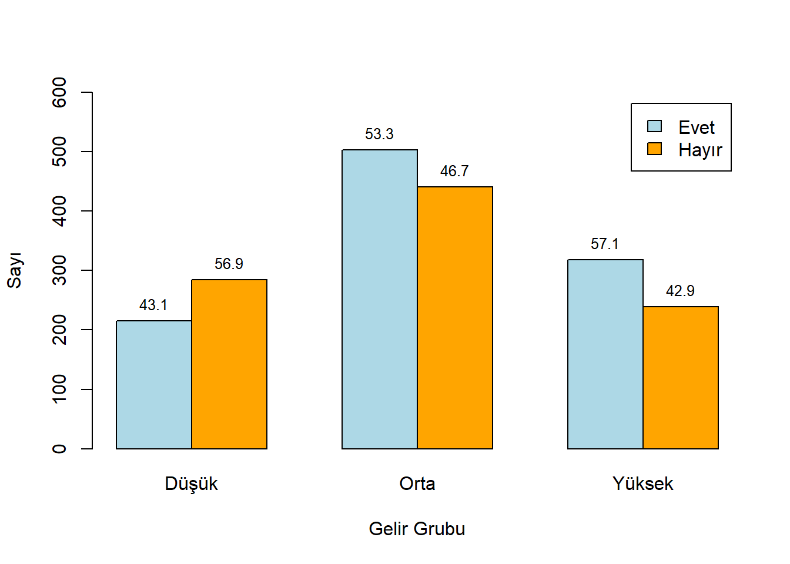
Şekil 3.14: Gelir grubuna göre sigara kullanımı
3.5.3 Dal-ve-yaprak
Dal-ve-yaprak (Stem-and-Leaf) grafiği, genellikle az sayıda nümerik gözlemin dağılımını görselleştirmek için kullanılan bir yöntemdir. Bu grafik, veri değerlerini basit bir şekilde gruplandırarak dağılımın şeklini gösterir. Özellikle bilgisayar ya da hesaplama araçlarına erişimin olmadığı durumlarda, bir kağıt ve kalemle hızlıca çizilebilir.
İki basamaklı örnek bir veri kümesinin Dal-ve-yaprak çizimi için aşağıdaki adımlar takip edilebilir:
Gözlem değerleri onlar ve birler basamağı alınarak “dal” ve “yaprak” olarak adlandırılan iki parçaya ayrılır. Örneğin 75 değeri için 7 dal ve 5 yaprak olarak alınabilir.
“Dal” kısmı, veri değerlerinin onlar basamağından oluşur ve genellikle soldan sağa doğru sıralanır.
“Yaprak” kısmı, veri değerlerinin birler basamağından oluşur ve her bir “dal” için bir dizi yaprak değeri içerir.
Her bir “dal” için yaprak değerleri, sıralanmış bir şekilde yan yana yazılır.
Son olarak, her bir dal ile yaprak değerleri arasında bir ayraç kullanılarak dal-ve-yaprak grafiği oluşturulur.
Dal ve yaprak kısımları verilerin değerlerine göre belirlenebilir. Örneğin üç basamaklı değerler alan bir veri kümesi için dal kısmı yüzler basamağı, yaprak kısmı birler basamağı olarak seçilebilir.
Örnek 3.8 Bir sınavdan alınan 100 üzerinden puanların dal-ve-yaprak çizimini oluşturalım:
The decimal point is 1 digit(s) to the right of the |
4 | 8
5 | 258
6 | 0368
7 | 55
8 | 07
9 | 5
Burada | işaretinin solunda kalan değerler “stem” (dal), sağında kalan değerler ise “leaf” (yaprak) olarak isimlendirilir. Buna göre bir öğrenci 48, üç öğrenci 50-60 arasında, 4 öğrenci 60-70 arasında not almıştır. Notu 75 olan iki öğrenci vardır. Ayrıca en yüksek notun 95 olduğunu ve 80-90 arasında not alan 2 öğrenci olduğunu görüyoruz.
Örnek 3.9 Beygir gücü veri kümesinin dal-ve-yaprak çizimini hazırlayınız.
Bu veri kümesinde otomobillerin beygir gücü 52 ile 335 arasında değerler almaktadır. Onlar ve yüzler basamağını “dal”, birler basamağını “yaprak” olarak seçersek:
grafiğin olası tüm basamakları içerdiğini ve boşluklar oluştuğunu görüyoruz. scale = 1 seçeneğini kullanarak grafiği daha kompakt bir şekilde çizebiliriz:
stem(beygir_gucu, scale =1)
The decimal point is 2 digit(s) to the right of the |
0 | 5677799
1 | 0011111122
1 | 55888888
2 | 123
2 | 556
3 | 4
Bu grafikte “0” 95’ten küçük iki basamaklı gözlemleri içerir. Bu değerler, 52, 62, 65, 66, 66, 91, ve 93, grafikte sırasıyla, 5, 6, 7, 7, 7, 9, ve 9 “yaprak” değerleriyle gösterilmiştir. Benzer şekilde grafikte yer alan 1 dalları 95 (dahil) ile 200 (hariç) arasındaki gözlemleri temsil etmektedir. 1 dal ve 0 yaprak değeri yaklaşık olarak 100 beygir gücünü, 1 dal ve 1 yaprak değeri yaklaşık 110 beygir gücünü göstermektedir. Diğer değerlerde benzer şekilde yorumlanabilir. Sıralanmış veriler:
En yüksek değerin (335) dal-ve-yaprak grafiğinde 3 dal ve 4 yaprak değeri ile temsil edildiğine dikkat ediniz.
Örnek 3.10 Türkiye’de il düzeyinde mutluluk endeksinin dal-ve-yaprak yaprak çizimi aşağıdaki gibidir:
load("Data/mutluluk.rda")stem(mutluluk$mutluluk)
The decimal point is 1 digit(s) to the right of the |
4 | 2
4 | 69
5 | 0012222333344
5 | 56677777778888889999
6 | 0000011111123334444
6 | 55555666788
7 | 00011122344
7 | 5668
Buna göre minimum ve maksimum mutluluk endeksleri sırasıyla 42 ve 78 olarak ölçülmüştür. Değerlerin 55-65 arasında yoğunlaştığı görülebilir. Stem basamağının tekrar etmesini istemiyorsak scale=0.5 seçilebilir:
stem(mutluluk$mutluluk, scale=0.5)
The decimal point is 1 digit(s) to the right of the |
4 | 269
5 | 001222233334456677777778888889999
6 | 000001111112333444455555666788
7 | 000111223445668
Bu grafik verilerin sayısal özet istatistikleri ile birlikte yorumlanabilir:
summary(mutluluk$mutluluk)
Min. 1st Qu. Median Mean 3rd Qu. Max.
41.98 56.54 60.39 61.15 65.57 77.66
3.5.4 Histogram
Sürekli değerler alan bir veri kümesinin dağılımını görselleştirmenin yaygın olarak kullanılan bir yolu gözlemlerin sınıflara ayrılması ve her sınıfa giren gözlem sayısının (frekansının) grafiğinin çizilmesidir. Bu grafik türüne histogram adı verilir.
Histogram, gözlemleri belirli aralıklara böler ve her aralıktaki gözlem sayısını ya da yüzdesini bir çubuk grafiği olarak gösterir. Bunun için genellikle aşağıdaki adımlar izlenir:
Değerler aralığını bulun.
Verileri belirli ve (genel olarak) birbirine eşit sınıflara bölün (gruplayın).
Her sınıftaki gözlem sayısını hesaplayın.
Her sınıf ya da aralık için bir çubuk oluşturun ve yüksekliğini o aralıktaki gözlem sayısına (frekans ya da sıklık) göre ayarlayın.
(a) Sınıf sayısı çok az
(b) Sınıf sayısı çok fazla
Şekil 3.15: Histogram sınıf sayısına duyarlıdır
Histogram çizimindeki en önemli kararlardan biri sınıf ya da aralık sayısının belirlenmesidir. Şekil 3.15 bir veri kümesi için farklı sınıf sayısı tercihlerini göstermektedir. Sınıf sayısı gereğinden az belirlenirse verilerdeki dağılım bilgisi kaybolur. Benzer şekilde sınıf sayısı çok yüksek belirlenirse çubuk sayısı artar, sınıflar arasında boşluklar oluşur ve dağılım fazla inişli çıkışlı olur.
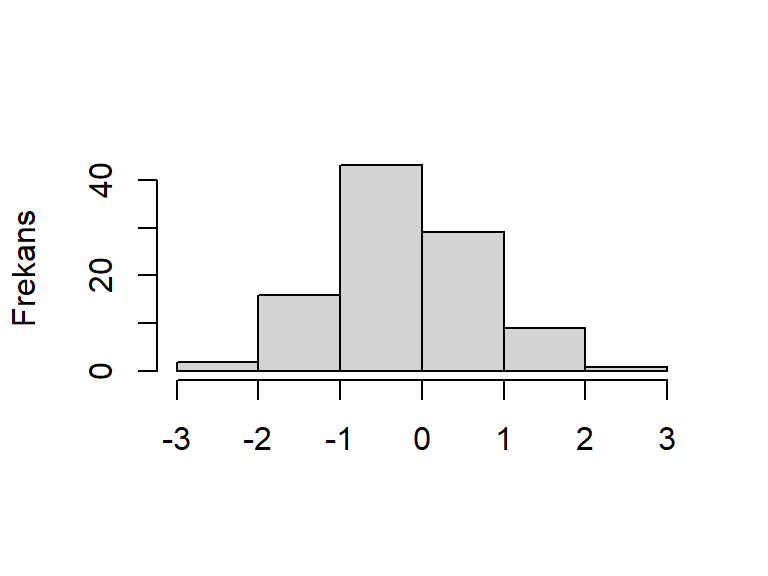
(a) Sınıf sayısı = 6
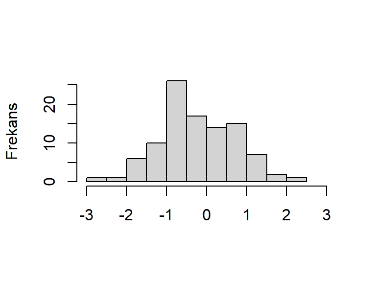
(b) Sınıf sayısı= 11
Şekil 3.16: Histogramda ideal sınıf seçimi
Şekil 3.16 aynı veri kümesi için sınıf sayısının 6 ve 11 olduğu iki durumu göstermektedir. Her iki sınıf sayısı için histogramın şeklinin yaklaşık olarak simetrik olduğunu görüyoruz. Sınıf sayısını ya da sınıf aralıklarını deneme yanılma ile belirlemek de mümkündür. Pratikte gözlem sayısına bağlı olarak sınıf sayısını belirleyebiliriz.
Histogramdaki sınıf sayısını belirlemek için çeşitli yardımcı formüller önerilmiştir. Sturges formülü, verinin büyüklüğüne bağlı olarak histogramın optimal aralık sayısını aşağıdaki formüle göre hesaplar: \[
h = 1+\log_2(n)
\] Burada \(h\) sınıf sayısı ve \(n\) gözlem sayısıdır. Bu formül,daha büyük veri kümeleri için daha fazla aralık ve daha küçük veri kümeleri için daha az aralık önerir.
Freedman-Diaconis kuralı, bir histogramın aralık sayısını belirlemek için kullanılan bir başka yöntemdir. Bu kural, veri setinin dağılımını ve büyüklüğünü dikkate alarak histogram aralıklarını belirler. Freedman-Diaconis kuralı şu şekildedir:
\[
bw = 2~IQR(x)~ n^{-1/3}
\] Burada \(bw\) aralık genişliğini, IQR ise kartiller aralığını temsil etmektedir (\(Q_3-Q_1\)).
Scott kuralı, bir histogramın aralık sayısını belirlemek için bir başka yöntemdir. Bu kural, veri setinin standart sapmasını ve büyüklüğünü dikkate alarak histogram aralıklarını belirler. \[
bw=3.5sd(x)n^{-1/3}
\] Burada \(sd(x)\) verilerin örneklem standart sapmasını göstermektedir.
Örnek 3.11 Mutluluk verileri için önerilen sınıf sayılarını hesaplayalım:
Şekil 3.17 mutluluk endeksinin histogramını göstermektedir. Sınıf sayısı 8 olarak belirlenmiştir. Bu histograma göre mutluluk düzeyinin merkezi eğiliminin 60 civarında olduğunu söyleyebiliriz. Mutluluk düzeyi azaldıkça ve arttıkça frekans azalmaktadır. Bu veri kümesinde ortalama ve medyan, sırasıyla, 61 ve 60 olarak bulunmuştu:
summary(mutluluk$mutluluk)
Min. 1st Qu. Median Mean 3rd Qu. Max.
41.98 56.54 60.39 61.15 65.57 77.66
R’da histogramın çiziminde kullanılan istatistikleri görmek istersek aşağıdaki kodu çalıştırabiliriz:
List of 6
$ breaks : int [1:9] 40 45 50 55 60 65 70 75 80
$ counts : int [1:8] 1 3 13 22 19 9 10 4
$ density : num [1:8] 0.00247 0.00741 0.0321 0.05432 0.04691 ...
$ mids : num [1:8] 42.5 47.5 52.5 57.5 62.5 67.5 72.5 77.5
$ xname : chr "mutluluk$mutluluk"
$ equidist: logi TRUE
- attr(*, "class")= chr "histogram"
hist() fonksiyonu birbirine eşit aralıklı sınıfları (breaks) ve her sınıfa düşen gözlem sayısını (counts) gösterir. Sınıf (bin) genişliği 5 birimdir. Gri renkte gösterilen dikdörtgenin uzunluğu (y ekseni) o sınıfa düşen gözlem sayısı ile orantılıdır. Sınıf aralıklarının tanımı \((a, b]\) (right = TRUE) ya da \([a,b)\) (right = FALSE) olarak seçilebilir.
Yoğunluk (density) her sınıfa düşen gözlem sayısının (counts) gözlem sayısı ve sınıf genişliğine oranıyla bulunur. Örneğin 40-45 aralığında sadece 1 gözlem vardır. Toplam gözlem sayısı 81 ve sınıf genişliği 5 olduğu için yoğunluk
1/81/5
[1] 0.002469136
yaklaşık 0.00247 olarak bulunur.
$mids sınıfların orta noktalarını göstermektedir.
cut() fonksiyonu ile de sınıfların ve sıklıklar hesaplanabilir:
Sayısal değerler alan bir değişkenin yoğunluk grafiği düzleştirilmiş histogram olarak yorumlanabilir. Sınıf aralıkları daraldıkça (ya da sınıf sayısı arttıkça) histogram yoğunluk fonksiyonuna yaklaşır.
(a)
(b)
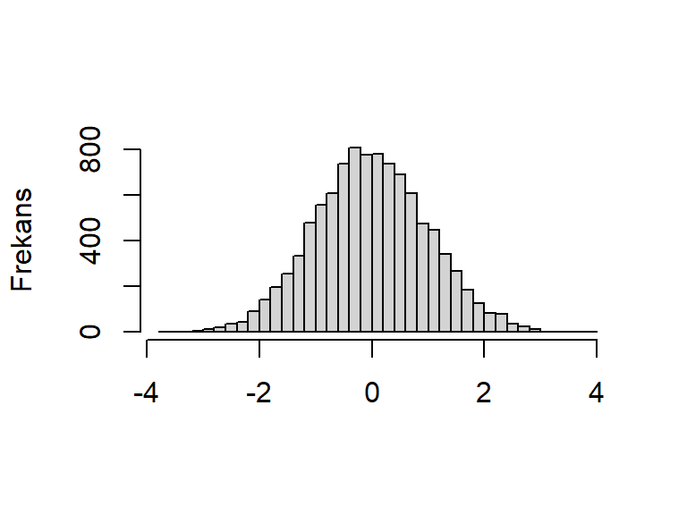
(c)
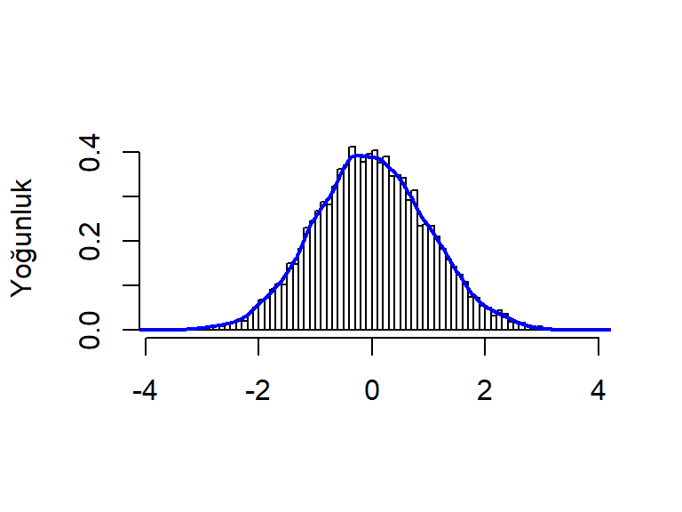
(d)
Şekil 3.18: Düzleştirilmiş histogram ya da yoğunluk fonksiyonu
Şekil 3.18 histogram ve yoğunluk arasındaki ilişkiyi göstermektedir. Bu grafikte sınıf sayısı arttıkça histogramın yoğunluk fonksiyonuna yaklaştığına dikkat ediniz (bkz. Şekil 3.18 (d)). Histogram yorumunda olduğu gibi dağılımın merkezine doğru yaklaştıkça yoğunluk artmaktadır. Görece daha az sıklıkta gerçekleşen değerler için yoğunluk daha düşük değerler alır. İzleyen bölümlerde buradan hareketle olasılıkları nasıl hesaplayabileceğimizi öğreneceğiz.
Rdensity() fonksiyonunu kullanarak yoğunlukları hesaplayabilir ve görselleştirebiliriz.
Örnek 3.12 İllere göre mutluluk endeksinin yoğunluk grafiğini çiziniz.
Yoğunluk ya da düzleştirilmiş histograma göre gözlem değerleri 55-65 arasında “yoğunlaşmaktadır” (Şekil 3.19). Sol ve sağ kuyruklara doğru gidildikçe yoğunluk azalmaktadır.
Histogram ve yoğunluğu birlikte de çizebiliriz (bkz. Şekil 3.20)
Yoğunluk fonksiyonunun detayları için yardım dosyasına bakınız, ?density()
Histogram ya da yoğunluk grafikleri dağılımın simetriklik, sağa ve sola çarpıklık gibi özelliklerine ilişkin önemli bilgiler verir. Simetrik bir dağılımın merkezinin iki tarafı birbirine benzer. Şekil 3.21 simetrik dağılan üç histogramı göstermektedir. Merkezden geçen kırmızı çizginin her iki tarafı benzer şekle sahiptir.
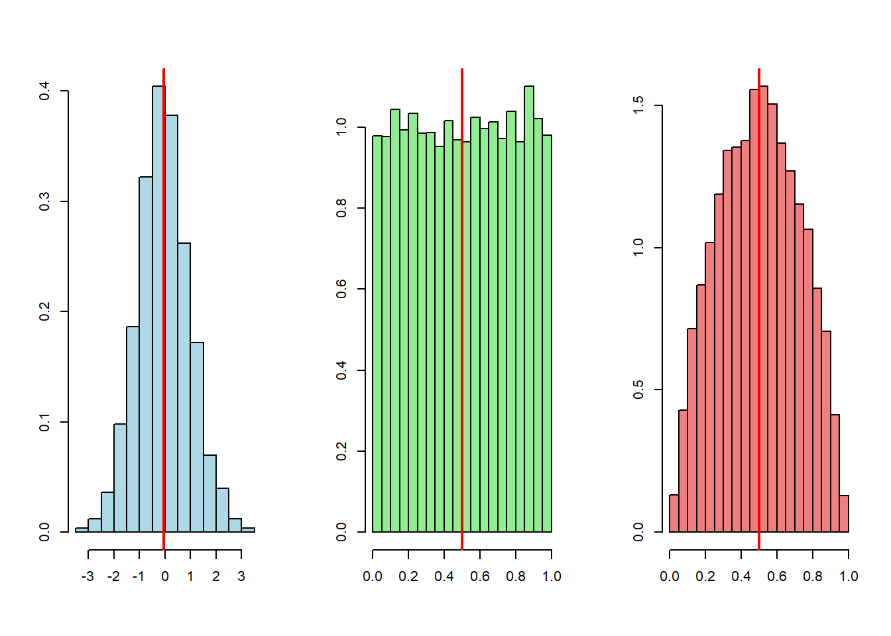
Şekil 3.21: Dağılımların simetrikliği
Simetrik bir dağılımın uçlardaki davranışı birbirine benzer. Ancak bazı dağılımların kuyrukları daha uzun olabilir. Buna çarpıklık denir.
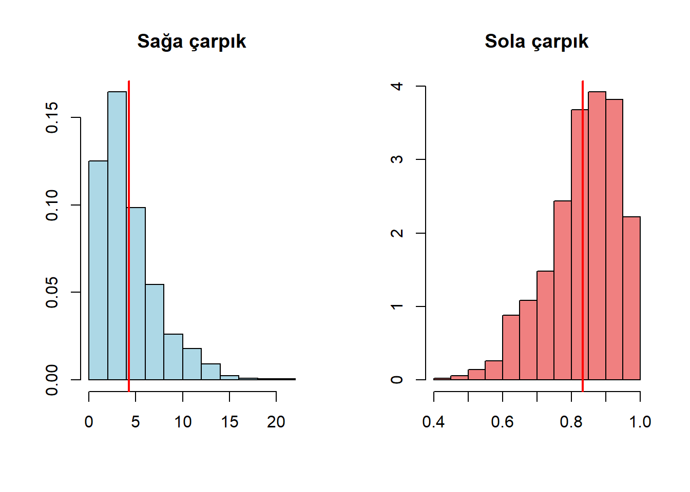
Şekil 3.22: Dağılımların çarpıklığı
Şekil 3.22 simetrik olmayan dağılımları göstermektedir. Sağa çarpık dağılımların sağ kuyruğu daha uzundur. Böyle bir dağılımda yoğunlaşma küçük ve orta değerlerdedir. Örneğin ücretler, hane geliri ve harcaması, ve ev fiyatları tipik olarak sağa çarpık dağılır. Sola çarpık bir dağılımda ise sol kuyruk daha uzundur. Değerler büyüdükçe yoğunlaşma artmaktadır. Çok zorlayıcı olmayan bir sınavda not dağılımı sola çarpık olabilir. Çok sayıda öğrenci yüksek not alırken daha az sayıda öğrenci düşük notlar alır. Başka bir örnek emeklilik yaşı olabilir.
(a) Tek tepeli (Unimodal) dağılım
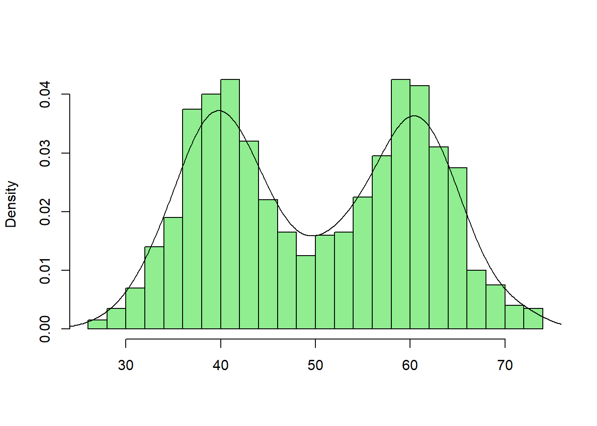
(b) Çift tepeli (Bimodal) dağılım
(c) Çok tepeli (Multimodal) dağılım
Şekil 3.23: Dağılımların modalliği
Histogramların önemli bir başka özelliği de modalliktir. Modallik, dağılımda kaç tane tepe noktası (mod) olduğunu gösterir ve verilerin farklı alt gruplara bölünmesi gerektiğine işaret edebilir.
Tek tepeli (unimodal) bir dağılımda, Şekil 3.23 (a) da görüldüğü gibi, histogramın yalnızca bir belirgin tepe noktası vardır. Verinin büyük çoğunluğu belirli bir değerde toplanmıştır. İki tepe noktası olan dağılımlar çift tepeli olarak adlandırılır (Şekil 3.23 (b)). Bu tür dağılımlar, genellikle verinin iki farklı grup veya popülasyondan geldiğini gösterebilir. Örneğin, erkek ve kadın bireylerin boy dağılımı çift tepeli olabilir. Üç veya daha fazla tepe noktası olan dağılımlar çok modlu olarak adlandırılır (Şekil 3.23 (c)). Bu durum, verinin farklı alt gruplardan oluştuğunu veya karmaşık bir yapıya sahip olduğunu gösterebilir.
3.6 Merkezi Eğilim Ölçüleri
Betimsel analizde, bir veri kümesinin genel eğilimini ya da merkezini özetleyen bazı temel ölçülere ihtiyaç duyarız. Bu ölçüler, veri kümesindeki değerlerin nerede toplandığını gösterir ve bize verinin genel yapısı hakkında bilgi verir. Merkezi eğilim ölçüleri, veri dağılımının tipik ya da ortalama bir değerini temsil etmeye çalışır. İstatistikte en yaygın kullanılan merkezi eğilim ölçüleri ortalama, medyan ve moddur.
3.6.1 Ortalama
Ortalama, genellikle bir veri kümesinin merkezini ya da “tipik” değerini gösteren en yaygın kullanılan ölçüdür. Gündelik hayatta da sıklıkla kullanılan bu kavram aslında iki farklı şekilde karşımıza çıkar: anakütle ortalaması ve örneklem ortalaması. Bu iki kavram birbirine benzer görünse de, aralarındaki farkları anlamak istatistiksel analizlerde oldukça önemlidir.
Tanım 3.5 (Anakütle ortalaması, \(\mu\)) \(N\) elemanlı bir anakütleye ilişkin verilerin anakütle ortalaması, bu değerlerin toplamınının gözlem sayısına bölünmesiyle bulunur: \[
\mu =\frac{1}{N}\sum_{i=1}^N x_i
\tag{3.1}\]
Anakütle ortalaması, \(\mu\), bir araştırmanın hedefi olan tüm birimlerden oluşan veri kümesinin ortalamasıdır. Örneğin, bir şehirde yaşayan tüm insanların ortalama geliri veya bir fabrikanın ürettiği tüm ürünlerin ortalama ağırlığı anakütle ortalamasını temsil eder. Anakütle ortalaması, teorik olarak tüm birimleri kapsayan bir hesaplamadır ve genellikle pratikte tam olarak gözlemlenemeyebilir.
Örnek 3.13 hane_anakutle.RData tüm hanehalklarına ilişkin bilgi içeren bir veri kümesi olsun. R’ın mean() fonksiyonunu kullanarak bu anakütlede ortalama hane büyüklüğünü, ortalama aylık geliri ve ortalama aylık harcamayı hesaplayalım:
N ort_kisi ort_gelir ort_harcama
[1,] 10000 3.5339 3532.476 3198.499
Anakütlede ortalama hane büyüklüğü yaklaşık 3.5 kişi, ortalama aylık gelir yaklaşık 3532 TL, ve ortalama aylık harcama yaklaşık 3198 TL’dir.
Tanım 3.6 (Örneklem ortalaması, \(\bar{x}\)) Eğer elimizde bir anakütleden çekilmiş \(n\) boyutlu bir örneklem varsa bu durumda örneklem ortalaması \[
\bar{x} =\frac{1}{n}\sum_{i=1}^n x_i
\tag{3.2}\] olarak tanımlanır.
Bu tanımlar matematiksel olarak eşdeğer olsalar da yorumlarının farklı olduğuna dikkat ediniz. Örneklem ortalaması, anakütle yerine, anakütleyi temsil eden daha küçük bir alt küme olan örneklemden hesaplanan ortalamadır. Örneğin, bir şehirde yaşayan 1000 kişilik bir örneklem seçildiğinde, bu kişilerin ortalama geliri örneklem ortalaması olarak adlandırılır. Başka bir örneklem çekildiğinde \(\bar{x}\) da değişir, yani sabit değildir (rassal değişken). İlerleyen bölümlerde örneklem ortalaması ile anakütle ortalamasına ilişkin nasıl çıkarım yapıldığını öğreneceğiz.
Örnek 3.14 Anakütleden 10 öğrenci rassal olarak seçilmiş ve GPA değerleri kaydedilmiştir: 3.2, 1.8, 2.5, 2.8, 3.7, 3.1, 2.9, 2.0, 3.5, 3.9.
Notların örneklem ortalaması 2.94 olarak bulunmuştur. Bu değer anakütlenin merkezine ilişkin çıkarımlar yapmak amacıyla kullanılabilir.
Örneklem ortalaması tüm gözlem değerlerine eşit ağırlık (\(1/n\)) verir: \[
\bar{x} =\frac{1}{n}\sum_{i=1}^n x_i = \frac{1}{n}x_1+\frac{1}{n}x_2+\ldots+\frac{1}{n}x_n.
\]
Verilerde çok büyük ya da çok küçük değerler varsa ortalama bu değerlere duyarlı olur (bkz. Şekil 3.24).
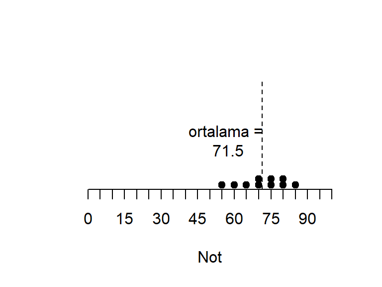
(a) Ortalama (0 hariç)
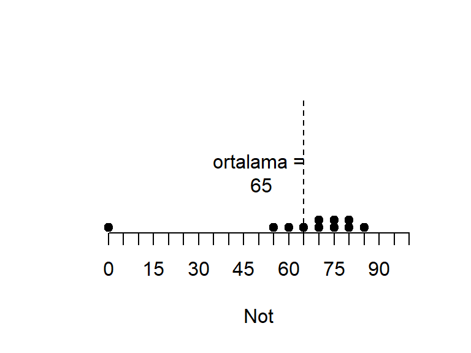
(b) Ortalama (0 dahil)
Şekil 3.24: Merkezi eğilim: Ortalama
Şekil 3.24 (a), notu 0 olan gözlem hariç tutulduğunda ortalamanın 71.5 olduğunu göstermektedir. Bu durumda, öğrencilerin çoğunluğunun aldığı puanlar 60-80 aralığındadır ve ortalama bu merkezi yansıtmaktadır. Şekil 3.24 (b) ise 0 puanının dahil edildiği durumu göstermektdir. Bu durumda uç değer ortalamayı aşağıya çekmiştir ve 65 olmuştur. Görüldüğü gibi sadece bir adet uç değer (0 puanı) bile ortalamanın ciddi şekilde düşmesine neden olmuştur.
Örnek 3.15 Hane anakütlesinden 200 gözlemlik bir rassal örneklem çekelim ve örneklem ortalamalarını hesaplayalım:
set.seed(468) # replikasyon için ind <-sample(1:N, # 1,2,...,N tamsayı vektörüsize =200, # çekilecek örneklem büyüklüğüreplace =FALSE# yerine koymadan çek )head(ind)
[1] 9793 8772 7081 5267 3628 7585
sample() fonksiyonunu kullanarak 1-10000 arasındaki tamsayı kümesinden tesadüfi olarak 200 tanesini yerine koymadan çektik ve ind nümerik (tamsayı) vektörünü oluşturduk. Daha sonra bu gözlemlere karşılık gelen satırları seçerek örneğimizi oluşturacağız:
n <-nrow(ornek1)ort_kisi <-mean(ornek1$hane_kisi_sayisi)ort_gelir <-mean(ornek1$aylik_gelir)ort_harcama <-mean(ornek1$aylik_harcama)orneklem_ort <-cbind(n, ort_kisi, ort_gelir, ort_harcama)print(orneklem_ort)
n ort_kisi ort_gelir ort_harcama
[1,] 200 3.59 3668.868 3333.335
200 haneden oluşan bu rassal örneklemdeki ortalama hane büyüklüğü 3.59, ortalama aylık gelir yaklaşık 3669 TL, ve ortalama aylık harcama yaklaşık 3333 TL’dir.
3.6.2 Medyan
Medyan, veriler küçükten büyüğe sıralandığında tam ortada yer alan değerdir. Eğer veri setinde çift sayıda gözlem varsa, ortadaki iki değerin ortalaması alınır.
Örnek 3.16 GPA verisi için medyanı hesaplayalım. Burada gözlem sayısı \(n=10\) olduğu için sıralanmış verilerde \(n/2\) ile \(n/2 +1\) pozisyonundaki değerlerin ortalamasıdır:
5 ve 6 pozisyonundaki değerlerin ortalaması \((2.9+3.1)/2=3\) medyanı verir. R programında median() fonksiyonu ile:
median(gpa)
[1] 3
bulunabilir.
Gözlem sayısı, \(n\), tek sayı olduğunda sıralanmış veride tam ortadaki değer medyanı verir. Veri kümesine bir gözlem daha ekleyelim ve medyanı hesaplayalım.
\(n=11\) olduğuna göre \((n+1)/2=6\) pozisyonundaki değer medyandır. Buna göre medyan 2.9 olur.
median(gpa2)
[1] 2.9
Medyan ortalamaya kıyasla uç değerlere daha az duyarlıdır (bkz. Şekil 3.25).
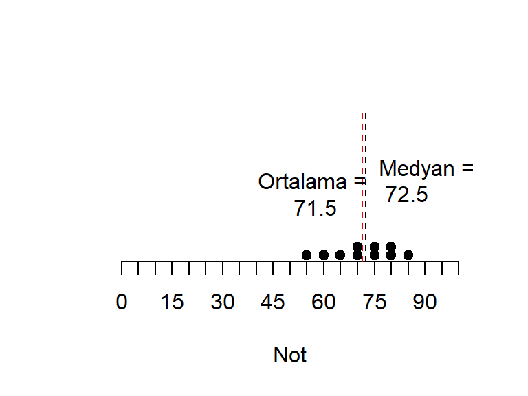
(a) Medyan (sıfırlar hariç)
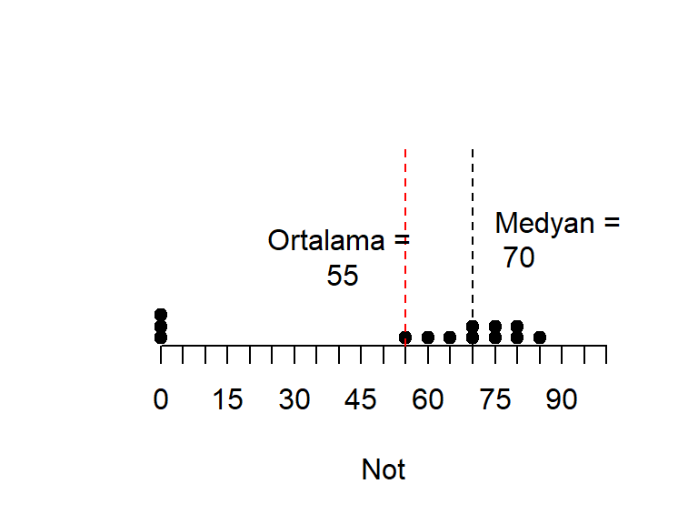
(b) Medyan (sıfırlar dahil)
Şekil 3.25: Merkezi eğilim: Medyan
Şekil 3.25 (a) öğrencilerin bir dersten aldıkları notların nokta grafiğini (her nokta bir öğrenciyi temsil etmektedir) ve merkeze ilişkin ölçüleri göstermektedir. Bu verilerde medyan 72.5 olarak hesaplanmıştır. Ortalamanın ise 71.5 olduğunu görüyoruz. Medyanın ve ortalamanın birbirine oldukça yakın olduğunu ve merkezi iyi yansıttılarını söyleyebiliriz.
Şekil 3.25 (b) ise 0 değerini alan üç gözlemin dahil edildiği grafiği göstermektedir. Ortalamanın ciddi şekilde düşerek 55 olduğunu, medyanın ise 70’e gerilediğini görüyoruz. Burada ilginç olan nokta, uç değerlerin ortalamayı büyük ölçüde düşürmesine rağmen medyanın daha stabil kalmasıdır. Medyan, uç değerlere karşı daha dirençlidir çünkü veri setinin ortadaki değerine bakar, aşırı küçük veya aşırı büyük değerlerden etkilenmez.
Örnek 3.17 Hanehalkı anakütlesi ve örneklemde hane kişi sayısı, aylık gelir ve aylık harcama için medyanları hesaplayalım.
Hem anakütlede hem de örneklemde medyan hane büyüklüğü 3 kişidir. Aylık gelir ve harcama değişkenlerinin örneklem medyanları anakütle medyanlarından biraz daha yüksektir.
3.6.3 Mod (En sık değer)
Bir veri kümesinin modu en çok tekrar eden değer ya da değerler olarak tanımlanır. Verilerde mod olmayabilir ya da birden fazla olabilir.
Örnek 3.18 Aşağıdaki veri kümesinin modunu bulalım. R table() fonksiyonunu kullanarak her bir değerin kaç kere tekrar ettiğini görebiliriz:
Bu faktör değişkeninin sıklık tablosunu oluşturalım.
table(ornek1$saglik_merkezi_erisim_faktor)
Çok kolay Kolay Orta Zor Çok zor
22 102 27 35 14
Bu tablodan da görüleceği gibi en sık cevap “Kolay”’dır (bkz. Şekil 3.27).
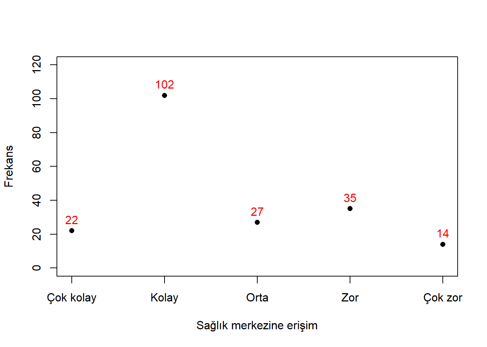
Şekil 3.27: En sık değer: sağlık merkezine erişimin kolaylığı
Yazdığımız fonksiyonu kullanarak da modu bulabiliriz:
mod(ornek1$saglik_merkezi_erisim)
[1] 2
mod(ornek1$saglik_merkezi_erisim_olcek)
[1] "Kolay"
Sıralı nominal (ordinal) değişkenler için mod ve medyan genellikle anlamlı bir bilgi içerir. Yukarıdaki sonuçlardan hareketle hanenin bulunduğu yerden sağlık merkezine erişimin zorluğuna ilişkin en çok verilen cevap “Kolay”’dır. Ancak nominal ve ordinal değişkenlerin nümerik temsilleri üzerinden ortalamaları yorumlarken dikkatli olmak gerekir. Özellikle sıralama aralıklarının eşit olmadığı durumlarda ortalamanın yanı sıra medyan ve modun kullanılması tercih edilebilir.
Örnek 3.22 Eğitim düzeyine ilişkin 6 gözlemli bir karakter vektörü verilmiş olsun:
egitim_seviyesi en son kazanılan diploma bilgisini içeren bir faktör değişkenidir:
egitim_seviyesi
[1] İlkokul Lise Üniversite Lise Lise Üniversite
Levels: İlkokul < Lise < Üniversite
Faktör değişkeni sayısal değere dönüştürüldüğünde eğitim düzeyinin sırasını yansıtacak şekilde ilkokul için 1, lise için 2, üniversite için 3 değerini almaktadır.
Ortadaki ve en sık rastlanan eğitim düzeyi “2” ya da “Lise”’dir.
3.6.4 Geometrik ortalama
Geometrik ortalama büyüme ve getiri oranları veya yüzdeleri hesaplamak için uygun bir ölçüdür. Aritmetik ortalamanın yanı sıra, özellikle büyüme oranlarının ortalamasını hesaplamada daha doğru sonuçlar verebilir. Geometrik ortalama gözlem değerlerinin çarpımının \(n\)-kökü olarak tanımlanır:
\[
\bar{x}_g = \sqrt[n]{x_1\cdot x_2\cdot \ldots\cdot x_n}=\left(x_1\cdot x_2\cdot \ldots\cdot x_n \right)^{1/n}=\left( \prod_{i=1}^n x_i \right)^{1/n}
\tag{3.3}\] Bu formüldeki \(\prod_{i=1}^n x_i\), 1’den \(n\) kadar tüm değerlerin çarpımını gösteren çarpım işlemcisidir.
Özellikle finansta getiri oranlarının geometrik ortalaması daha doğru bir şekilde ortalama davranışı yansıtabilir. \(g_i\) getiri oranı ise, geometrik ortalama \[
\bar{x}_g = \left( \prod_{i=1}^n (1+g_i) \right)^{1/n} -1
\tag{3.4}\] olarak tanımlanır.
Örnek 3.23 Bir yatırımcı 1000 TL’lik anaparayı bir finansal varlığa yatırmıştır. Varlığın değeri 1. yılda 1200 TL, 2. yılda 1260 TL, 3. yılda 1134 TL, 4. yılda 1304.1 TL, ve 5. yılda 1238.9 TL olmuştur. Yıllık ortalama getiri yüzde kaçtır?
Çözüm:
Önce her yılın getirisini hesaplayalım:
yıl getirisi: \[
\frac{1200}{1000} - 1 = 0.20
\]
yıl getirisi: \[
\frac{1260}{1200} - 1 = 0.05
\]
yıl getirisi: \[
\frac{1134}{1260} - 1 = -0.10
\]
yıl getirisi: \[
\frac{1304.1}{1134} - 1 = 0.15
\]
yıl getirisi: \[
\frac{1238.9}{1304.1} - 1 = -0.05
\] Aritmetik ortalamayı hesaplarsak \[
\bar{x} = \frac{0.2+0.05-0.10+0.15-0.05}{5}=0.05
\] buluruz. Yani aritmetik ortalamaya göre varlık her yıl ortalama \(\%5\) büyümüştür. Ancak bu yanıltıcı olabilir.
Tablo 3.3: 1000 TL yatırımın yıllık getirileri ve dönem sonu değeri
Buna göre finansal varlık yılda ortalama yaklaşık \(\%4.38\) büyümüştür. Bu aritmetik ortalamaya göre daha düşük bir ortalama getiriye işaret etmektedir.
Tablo 3.3 yatırımın yıllara göre getirilerini ve dönem sonu değerini göstermektedir. Her yıl bu ortalama oranda büyürse 5 yıl sonundaki değere ulaşılmaktadır. Aritmetik ortalama ile hesapladığımızda ise daha büyük bir değere ulaşıyoruz.
3.7 Sıra İstatistikleri, Kantiller ve Yüzdelikler
Veriyi betimlemedeki en önemli araçlardan biri gözlemlerin küçükten büyüğe doğru sıralanmasıdır. Elimizde \(x_1,x_2,\ldots,x_n\) gibi bir örneklem olduğunu düşünelim. Bu değerleri artan şekilde sıralayalım: \[
x_{(1)}, x_{(2)},x_{(3)},\ldots,x_{(n)}
\] Burada sıralamada \(k\)nci konumda yer alan değer, \(x_{(k)}\), \(k\) sıra istatistiğidir. Örneğin \(x_{(1)}\) en küçük (minimum), \(x_{(n)}\) en büyük (maximum) değeri gösterir. \[
x_{(1)} = \min(x_1,x_2,\ldots,x_n)
\]\[
x_{(n)} = \max(x_1,x_2,\ldots,x_n)
\]
Bu sıralı veri kümesinden hareketle \[
x_{(1)} = 1.8,~~ x_{(2)}=2.0,~~ x_{(3)}=2.50,\ldots,~~ x_{(10)}=3.9
\] yazabiliriz.
Sıra istatistiklerini kullanarak gözlemlerin yüzde kaçının küçük olacağı değerleri bulabiliriz. Gözlemlerin yaklaşık olarak \(\%(k/n)100\) kadarı \(x_{(k)}\) değerinden küçük olacaktır. Bu istatistikler verinin değişkenliği ve yayılımı hakkında önemli bilgiler verebilir.
Tanım 3.7 (Kantil) Bir veri kümesini belirli sayıda eşit parçaya bölen değerlere kantil (quantile) adı verilir. Bu değerler, veri setindeki gözlemlerin belirli bir yüzdesinin altında veya üstünde kalan değerleri gösterir. Kantiller, sıra istatistikleri kullanılarak hesaplanır.
Uygulamada genellikle gözlemleri ikiye, dörde, ona ya da yüze bölen kantil değerleri kullanılır.
Tanım 3.8 (Kartil (Çeyreklik, Dördebölen, Quartile)) Çeyreklikler, kantillerin özel bir durumudur ve gözlemleri dört eşit parçaya böler:
Birinci Çeyrek (\(Q_1\)): Gözlemlerin %25’inin altında kaldığı değeri gösterir.
İkinci Çeyrek (\(Q_2\)) veya Medyan: Gözlemlerin %50’sinin altında kaldığı değeri gösterir (medyan).
Üçüncü Çeyrek (\(Q_3\)): Gözlemlerin %75’inin altında kaldığı değeri gösterir.
Bu çeyrekler, veri setinin yayılımı ve merkezi eğilimi hakkında bilgi verir. Çeyrekler, sıra istatistikleri kullanılarak hesaplanır.
Sıralanmış \(n\) gözlemli bir örneklemde, \(k = \frac{n+1}{4}=0.25(n+1)\) olmak üzere, \(j\) kartili aşağıdaki formül ile bulunabilir:
\[\begin{align*}
Q_j &= \begin{cases}
x_{(jk)} & \text{ } jk \text{ bir tamsayı ise} \\
x_{\lfloor jk \rfloor} + (jk - \lfloor jk \rfloor) \cdot (x_{\lfloor jk \rfloor + 1} - x_{\lfloor jk \rfloor}) & \text{ } jk \text{ bir tamsayı değilse}
\end{cases} \\
\end{align*}\]
Burada \(\lfloor \cdot \rfloor\) bir sayıyı aşağı yuvarlayan taban fonksiyonunudur; \(a=1.85\) ise \(\lfloor a \rfloor=1\) olur. Yani \(a\)’dan büyük olmayan en büyük tamsayı 1’dir. Benzer şekilde tavan fonksiyonu, \(\lceil \cdot \rceil\), tanımlanabilir. Tavan fonksiyonu \(a\)’dan küçük olmayan en küçük tamsayı olarak tanımlanır, bu durumda \(\lceil a \rceil=2\) olur.
Örnek 3.25 Örneğin 11 gözlemli bir veri kümesinde birinci kartili, \(Q_1\), hesaplamak istediğimizi düşünelim. \(k=0.25(11+1)=3\) bir tamsayı olduğu için birinci kartil \(Q_1=x_{(k)}=x_{(3)}\), yani üçüncü sıradaki gözlem olur.
Burada \(x_{(3)}=2.5\) olduğu için birinci kartil \(Q_1=2.5\) olarak bulunur.
Örnek 3.26 \(n=10\) gözlemli bir veri kümesinde ise \(0.25(10+1)=2.75\) bir tamsayı olmadığı için ikinci ve üçüncü sıradaki değerlerin interpolasyonu ile bulunur. Örneğin,
x <-c(1:10)*10rbind(`sıra`=1:10, `sıralı_x`=sort(x))
bulunur. 8. ve 9. sıradak gözlemlerin farkının dörtte birini 8. sıradaki gözleme ekliyoruz.
R’da kantillerin ve çeyrekliklerin hesaplanmasında quantile() fonksiyonu kullanılabilir. Bu fonksiyon kantillerin hesaplanmasında farklı algoritmalar kullanır. Kullanıcılar type girdisini seçerek istedikleri algoritmaya göre kantilleri hesaplayabilirler. Bu algoritmalar interpolasyonun türüne göre farklılaşmaktadır. R’ın varsayılan algoritması Hyndman ve Fan yöntemini (type = 7) kullanmaktadır:
quantile(x, probs =c(0.25, 0.5, 0.75), type =7)
25% 50% 75%
32.5 55.0 77.5
Bu algoritma ile bulunan kartiller biraz farklıdır. Yukarıda açıkladığımız yöntemi uygulamak için type=6 opsiyonu kullanılabilir:
quantile(x, probs =c(0.25, 0.5, 0.75), type =6)
25% 50% 75%
27.5 55.0 82.5
Küçük veri kümelerinde farklılık gösterse de bu algoritmalar daha büyük verilerde birbirine yaklaşık sonuçlar verir.
Örnek 3.27 Hanehalkı örnekleminde aylık gelirin kartillerini bulalım.
# type=7quantile(hane_ornek$aylik_gelir, probs =c(0.25, 0.5, 0.75), type =7)
25% 50% 75%
1883.234 2863.117 4529.665
# type=6quantile(hane_ornek$aylik_gelir, probs =c(0.25, 0.5, 0.75), type =6)
25% 50% 75%
1883.143 2863.117 4531.803
Her iki yöntem birbirine benzer sonuçlar vermiştir. Buna göre hanehalklarının %25’inin aylık geliri 1883 TL’den, %50’sinin 2863 TL’den, ve %75’inin 4530 TL’den düşüktür.
Tanım 3.9 (Yüzdelik) Yüzdelikler (percentile), kantillerin bir başka özel durumudur ve veri kümesini yüzdelik dilimlere böler. Örneğin, 90. yüzdelik dilim, veri setindeki gözlemlerin %90’ının bu değerin altında olduğunu belirtir.
Genel olarak \(p\) yüzdeliği gözlemlerin yaklaşık %\(p\) kadarının küçük olduğu değere eşittir. Sıralanmış bir veri kümesinde \((n+1)p/100\) pozisyonundaki değer olarak bulunabilir. Benzer şekilde ondalıklar (decile) da tanımlanabilir.
Örnek 3.28 R’da yüzdelikleri hesaplamak için quantile() fonksiyonu kullanılabilir:
# R ile kantil hesabı quantile(hane_ornek$yillik_gelir, probs =c(0.1, 0.25, 0.9))
10% 25% 90%
15583.23 22598.81 81032.53
Buna göre hanelerin %10’unun yıllık geliri 15583.23 TL’den düşüktür. Benzer şekilde 22598.81 TL’den daha az yıllık geliri olan hanelerin oranı %25’dir. Hanelerin %90’ının geliri 81032.53 TL’den düşüktür.
Örnek 3.29 hane_ornek veri kümesinde yer alan aylik_harcama değişkeninin histogramını ve yoğunluk fonksiyonunu çiziniz. Özet istatistiklerle birlikte yorumlayınız. Ayrıca, 0.1, 0.90, 0.95 ve 0.98 yüzdelik değerlerini hesaplayınız ve yorumlayınız.
breaks=100 ile histogramı ve yoğunluk fonksiyonunu çizelim. X ekseninin sınırlarını (0, 15000) olarak belirleyelim.
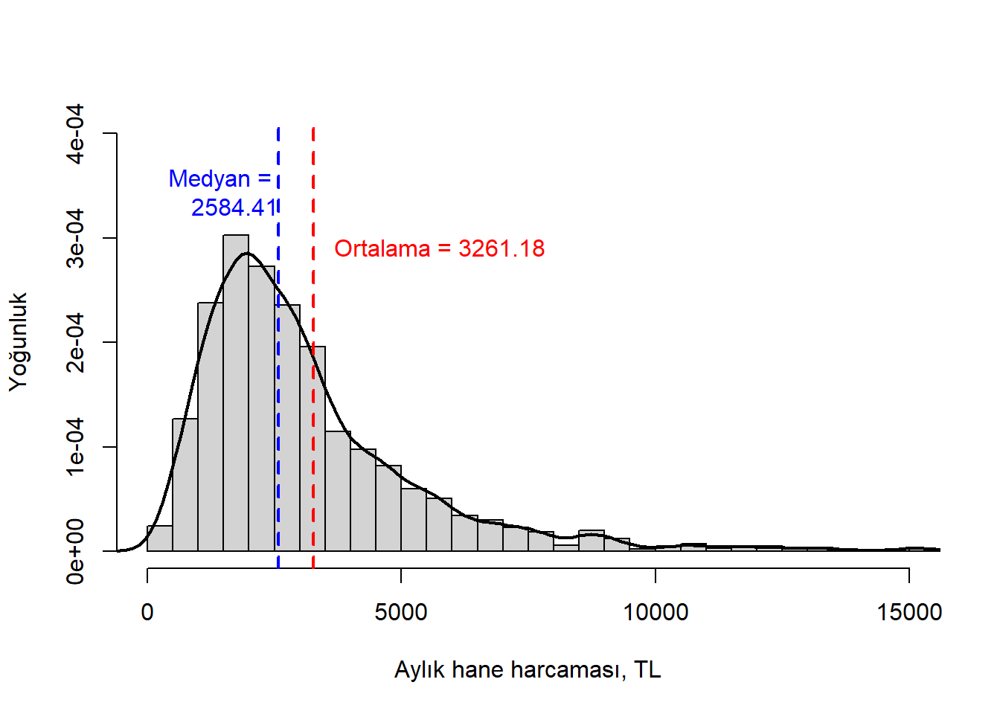
Şekil 3.28: Hanehalkı harcama dağılımı
Özet istatistikler:
summary(hane_ornek$aylik_harcama)
Min. 1st Qu. Median Mean 3rd Qu. Max.
215 1708 2584 3261 3948 58994
Histogram ve yoğunluk grafiğinden de görüleceği gibi (bkz. Şekil 3.28) aylık hane harcamaları sağa çarpık bir dağılıma sahiptir. Örneklem ortalaması (3261 TL) medyan hane harcamasından (2584 TL) daha büyüktür. Hanelerinin yaklaşık % 75’inin aylık harcaması 3948 TL’den küçüktür.
Hanelerin % 10’u aylık yaklaşık 1108 TL’den daha az harcamaktadır. Dağılımın diğer ucunda, hanelerin % 5’i 7802 TL’den daha fazla, % 2’si ise 10869 TL’den daha fazla harcamaktadır.
3.8 Değişkenlik Ölçüleri
Bir veri kümesindeki merkezi eğilimin yanı sıra, değerlerin ne kadar yayıldığını ya da birbirinden ne kadar farklı olduğunu belirlemek, verilerin doğasını anlamak için önemlidir. Değişkenlik ölçüleri, bu yayılımı ölçmek ve verilerin dağılımı hakkında bilgi sahibi olmak için kullanılır.
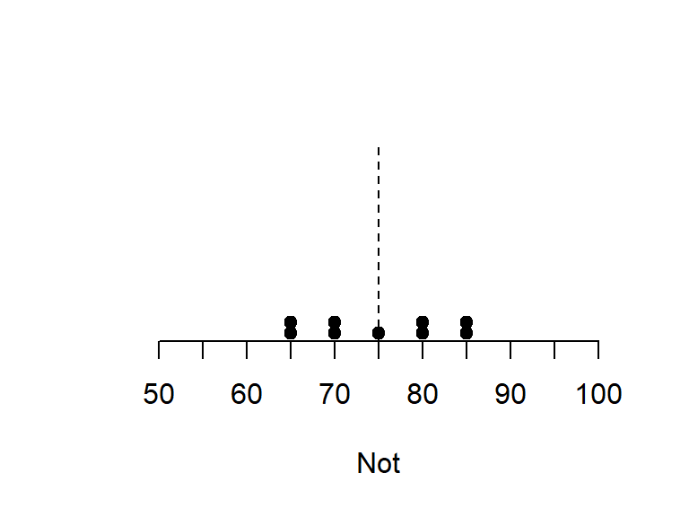
(a) Birinci sınav sonucu, ortalama = 75
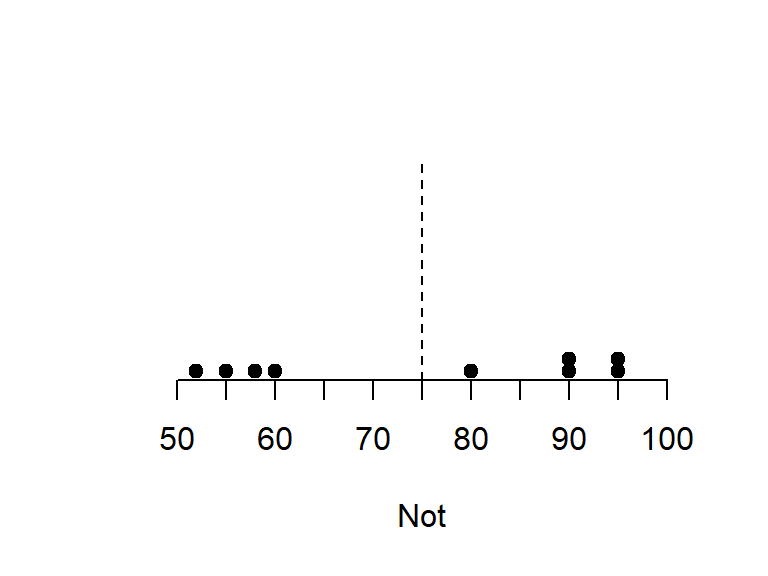
(b) İkinci sınav sonucu, ortalama = 75
Şekil 3.29: Ortalaması aynı değişkenliği farklı iki veri kümesi
Şekil 3.29 iki sınav sonucuna ilişkin notları göstermektedir. Her iki sınavın ortalaması 75’dir. Birinci sınavın notları ortalama çevresinde daha dar bir aralıkta dağılmaktadır. İkinci sınavın sonuçları ise daha geniş bir aralıkta değerler almaktadır.
3.8.1 Aralık
Aralık (range), verideki en büyük ve en küçük değer arasındaki farktır. Sıralanmış gözlemlerde \[
\mbox{Aralık} = x_{(n)} - x_{(1)}
\] formülüyle kolayca bulunabilir. Şekil 3.29 verilerine göre birinci sınavın aralığı \(85-65=20\), ikinci sınavın aralığı ise \(95-52=43\) olarak bulunur. Ortalaması aynı olan bu veri kümelerinde aralığı daha geniş olan daha yüksek değişkenliğe sahiptir diyebiliriz.
Aralık ölçüsü değerlerin genel dağılımı hakkında bir fikir verse de tek başına çok kısıtlı bir bilgi sağlar. Özellikle uç değerlerin varlığı aralığı doğrudan etkiler. Örneğin notları 0 ve 100 olan iki öğrenci olsaydı aralık 100 olurdu. Uç değerlere fazla duyarlı olduğu için aralık yerine dağılımın yüzde ellilik orta kısmındaki değerler aralığına bakmak isteyebiliriz. Buna kartiller aralığı denir.
3.8.2 Kartiller Aralığı
Kartiller, daha önce tanımladığımız gibi, gözlemlerin dört eşit parçaya bölündüğü noktalardır. Veriler küçükten büyüğe sıralandığında, ilk, ikinci (medyan), ve üçüncü kartiller hesaplanır. Kartiller aralığı üçüncü kartil ile birinci kartil arasındaki fark olarak tanımlanır:
\[
IQR = Q_3-Q_1
\tag{3.5}\] Burada \(Q_3\) gözlemlerin %75’inin küçük olduğu üçüncü kartil değerini, \(Q_1\) ise %25’inin küçük olduğu birinci kartil değerini göstermektedir.
Örnek 3.30 13 öğrencinin not verisi aşağıdaki gibidir.
Buna göre medyan (\(Q_2\)) yedinci sıradaki değerdir: 66. Birinci ve üçüncü kartiller ise
kartiller <-quantile(not, probs =c(0.25, 0.5, 0.75), type =6)kartiller
25% 50% 75%
56.5 66.0 82.5
\(Q_1=56.5\) ve \(Q_3=82.5\) olarak bulunur. Öğrencilerin %25’i 56.5’den, %75’i 82.5’den düşük not almıştır. Bu ikisi arasındaki fark
IQR <- kartiller[3]-kartiller[1]IQR
75%
26
kartiller aralığıdır, \(IQR=26\). Bu dağılımın ortasında yer alan gözlemlerin aralığı olarak düşünülebilir. Özellikle uç değerlerin varlığı durumunda aralık yerine dördebölenler aralığı tercih edilebilir.
3.8.3 Kutu çizimi
Kutu ya da kutu-bıyık (box-whiskers) çizimi olarak da isimlendirilen bu grafik verinin dağılımı hakkında bilgi verir ve beş-sayı özetinden hareketle oluşturulur. Beş-sayı özeti aşağıdaki bileşenlerden oluşur:
Minimum: Verideki en küçük değer, \(x_{(1)}\) sıra istatistiği.
Birinci Çeyrek (Q1): Verinin %25’inin altında kalan değeri gösterir (birinci kartil).
Medyan (Q2): Verinin ortasındaki değeri temsil eder. Verinin %50’si bu değerin altındadır (ikinci kartil).
Üçüncü Çeyrek (Q3): Verinin %75’inin altında kalan değeri gösterir (üçüncü kartil).
Maksimum: Verideki en büyük değer.
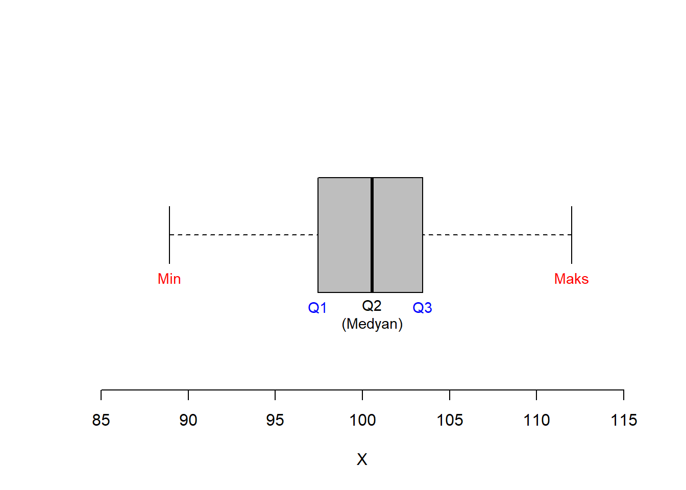
Şekil 3.30: Kutu grafiği (uç değerlerin olmadığı durum)
Şekil 3.30 uç değerlerin (outlier) olmadığı durum için örnek bir kutu çizimini göstermektedir. Bu grafiğin bileşenleri şunlardır:
Kutu: Q1 ve Q3 arasında yer alır ve verinin ortanca %50’sini içerir. Kutunun içinde yer alan çizgi (dikey ya da yatay olabilir) medyanı gösterir. Buradan hareketle merkezi aralığı (IQR) kolayca değerlendirebiliriz.
Bıyıklar (Whiskers): Kutunun her iki ucundan minimum ve maksimum değerlere kadar uzanır. Eğer tüm gözlem değerleri \(1.5\times IQR\) aralığı içindeyse alt ve üst bıyık noktaları aynı zamanda minimum ve maksimum değerlerdir. Ancak bu aralığın dışında değerler varsa bunlar ayrıca gösterilir.
Uç (aşırı) Değerler (Outliers): Q1-1.5IQR’den küçük veya Q3+1.5IQR’den büyük olan değerlerdir. Bunlar kutu ve bıyıkların dışında tekil noktalar olarak gösterilir. Örneğin Şekil 3.31 alt ve üst uç değerlerin olduğu bir veri kümesine ilişkin kutu çizimini göstermektedir. Bu grafikte alt ve üst bıyık ötesindeki noktalar uç değerleri göstermektedir.
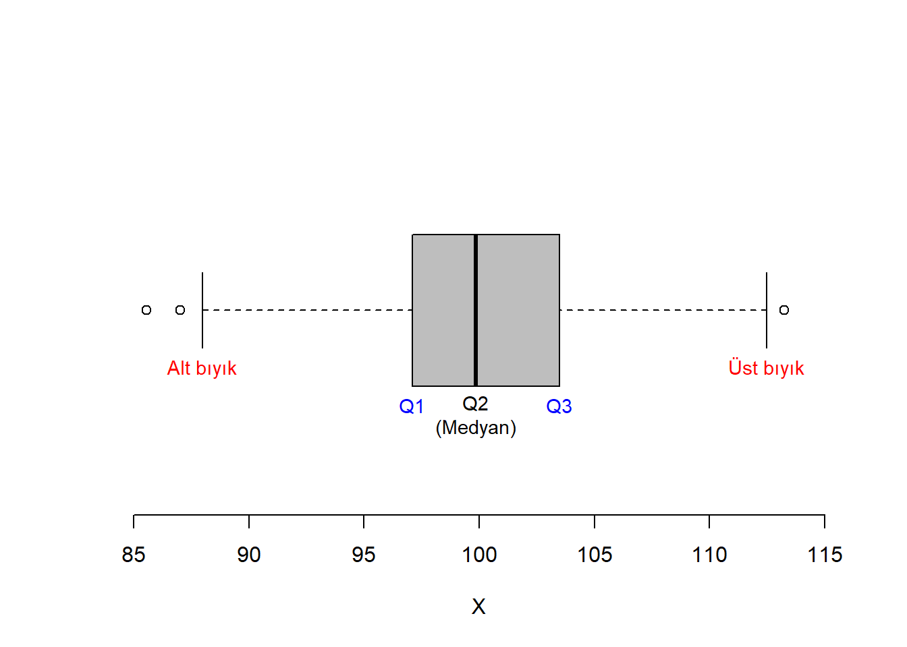
Şekil 3.31: Kutu grafiği (uç değerlerin olduğu durum)
R’da kutu çizimi için boxplot() fonksiyonu kullanılabilir (bkz. Şekil 3.32):
Mutluluk endeksinin kutu grafiğini 5-sayı özeti ile birlikte yorumlayabiliriz.
# min Q1 median Q3 maxfivenum(mutluluk$mutluluk)
[1] 41.98 56.54 60.39 65.57 77.66
summary(mutluluk$mutluluk)
Min. 1st Qu. Median Mean 3rd Qu. Max.
41.98 56.54 60.39 61.15 65.57 77.66
Buna göre minimum mutluluk düzeyi yaklaşık olarak 42, ilk kartil 56.54, medyan 60.39, üçüncü kartil yaklaşık 66 ve maksimum mutluluk yaklaşık 78’dir. Medyan ve ortalamanın birbirine yakın olması mutluluğun yaklaşık olarak simetrik dağıldığına işaret etmektedir. Kutu çiziminde medyan çizgisinin kartiller aralığın gösteren dikdörtgeni yaklaşık iki eşit parçaya ayırdığına dikkat ediniz.
3.8.4 Varyans
Varyans bir veri kümesinde merkez çevresindeki değişkenliğin bir ölçüsüdür. Verilerin anakütleye ya da örnekleme ait olmasına göre farklı şekilde tanımlanır. Örneklem ya da anakütle varyansını hesaplamanın ilk adımı her bir gözlem değerinin ortalamaya olan uzaklığının hesaplanmasıdır.
Ortalaması \(\mu=\sum_i X_i/N\) olan bir anakütlede gözlem değerlerini \((X_1, X_2,\ldots,X_N)\) ile gösterelim. Tipik elemanı \(X_i\) olan bu gözlem kümesinde her bir değerin anakütle ortalaması ile farkını, \(X_i-\mu\), hesaplayabiliriz. Böylece her bir gözlemin \[
(X_1-\mu),(X_2-\mu),(X_3-\mu),\ldots,(X_n-\mu)
\] merkeze olan uzaklığını bulabiliriz. Fark pozitif işaretliyse bu gözlemin ortalamanın üzerinde, negatif işaretliyse ortalamanın altında olduğunu gösterir. Mutlak büyüklüğü ise uzaklığa ilişkin bilgi içerir.
Bu farklardan hareketle bir değişkenlik ölçütü oluşturabilir miyiz? Ortalamadan farkların toplamını aldığımızı düşünelim:
Burada \(X_i\)’lerin toplamının tanım gereği \(N\mu\) olduğuna dikkat ediniz. Bu farkların toplamı, gözlem kümesi ne olursa olsun 0 olduğu için bir değişkenlik ölçütü olamaz.
Ortalamadan büyük ve küçük olan gözlemlere eşit ağırlık veren bir değişkenlik ölçütü geliştirmenin bir yolu bu farkların karesini almaktır: \[
(X_1-\mu)^2,(X_2-\mu)^2,(X_3-\mu)^2,\ldots,(X_n-\mu)^2
\] Ortalamadan uzaklığın karelerinin toplamından hareketle bir değişkenlik ölçütü oluşturabiliriz. Buna varyans adı verilir.
Genellikle \(\sigma^2\) ile gösterilir ve sigma-kare şeklinde okunur. Varyans hiç bir zaman negatif olamaz. Tüm gözlemler aynı değere eşitse, yani sabit gözlemler için varyans 0 olur.
Aşağıda verilen kısa yol formülüyle ortalamadan farkları almadan da varyansı hesaplayabiliriz:
Örnek 3.31 \(X\) değişkeninin anakütle değerleri \((65,70,75,80,85,80,85,65,70)\) olsun. Anakütle ortalaması \(\mu = 75\) olmak üzere Tablo 3.4 varyans hesaplaması için gerekli büyüklükleri göstermektedir.
Tablo 3.4: \(N=9\) gözlemli bir anakütle için varyans hesaplama tablosu
\(i\)
\(X_i\)
\(X_i - \mu\)
\((X_i - \mu)^2\)
\(X_i^2\)
1
65
-10
100
4225
2
70
-5
25
4900
3
75
0
0
5625
4
80
5
25
6400
5
85
10
100
7225
6
80
5
25
6400
7
85
10
100
7225
8
65
-10
100
4225
9
70
-5
25
4900
Toplam
675
0
500
51125
Bu tablodan hareketle anakütle varyansı \[
\sigma^2 =\frac{1}{N}\sum_{i=1}^N (X_i-\mu)^2 = 500/9=55.56
\] olarak bulunur. Kısa yol formülünü kullanarak \[
\sigma^2 = \frac{1}{N}\sum_{i=1}^N X_i^2-\mu^2 = 51125/9 - 75^2 = 55.56
\] aynı sonuca ulaşılabilir.
Benzer şekilde, örneklem varyansı gözlemlerin örneklem ortalamasından farkının kareler toplamına dayanır. Elimizde bir örneklem olduğu için anakütle ortalamasını \(\mu\) bilmeyiz. Bu nedenle varyans formülünde \(\mu\) için iyi bir tahminci kullanmamız gerekir. Anakütle ortalamasının yansız bir tahmincisi örneklem ortalamasıdır. Böylece ölçütümüzü her bir örneklem değerinin aritmetik ortalamaya olan uzaklığının karesine dayandırabiliriz.
\(n\) gözlemli bir örneklemi \((x_1, x_2,\ldots,x_n)\) ile gösterelim. Örneklem ortalaması \(\bar{x}=\sum_i X_i/n\) olsun. Tipik elemanı \(x_i\) olan bu gözlem kümesinde her bir değerin örneklem ortalaması ile farkını, \(x_i-\bar{x}\), hesaplayabiliriz. Böylece her bir gözlemin \[
(x_1-\bar{x}),(x_2-\bar{x}),(x_3-\bar{x}),\ldots,(x_n-\bar{x})
\] örneklem ortalamasına ne kadar uzak olduğunu bulabiliriz. Anakütle ortalamasından farkların toplamının 0 olduğunu göstermiştik. Örneklem ortalamasından farkların toplamının da 0 olduğu kolayca gösterilebilir:
\[\begin{align}
\nonumber \sum_{i=1}^n (x_i-\bar{x})&= (x_1-\bar{x})+(x_2-\bar{x})+(x_3-\bar{x})+\ldots +(x_n-\bar{x})\\
&= (x_1+x_2+x_3+\ldots+x_N)-n \bar{x}\\
\nonumber &= n \bar{x} - n \bar{x}\\
\nonumber &= 0
\end{align}\]
Tanım 3.11 (Örneklem varyansı, \(s^2\)) \(n\) gözlemli bir veri kümesi için örneklem varyansı \[
s^2 =\frac{1}{n-1}\sum_{i=1}^N (x_i-\bar{x})^2
\tag{3.7}\] olarak tanımlanır. Burada fark karelerinin toplamının gözlem sayısına değil, \(n-1\)’e bölündüğüne dikkat ediniz. Daha sonra detalı olarak inceleyeceğimiz gibi, örneklem varyansı, \(s^2\), bilinmeyen anakütle varyansının sapmasız/yansız bir tahmincisidir.
Örneklem varyansının kısa yol formülü aşağıda türetilmiştir:
olur. Örneklem varyansı var() fonksiyonu ile de bulunabilir:
var(harcama)
[1] 1115000
Varyans (örneklem ya da anakütle) sadece negatif olmayan değerler alır, yani ya 0 olur ya da pozitif değerler alır. Varyansın 0 olması verilerde değişkenlik olmadığı anlamına gelir (sabit değerlerden oluşur). Diğer taraftan varyansın mutlak yorumu karelerinin alınmasından dolayı zordur. Verilerin ölçü birimi cinsinden yorumu kolaylaştırmak için standart sapma kullanılabilir.
3.8.5 Standart Sapma
Harcama verisinde ortalama 3750 TL’ye karşılık varyans 1115000 olarak bulunmuştu. Bu değeri nasıl yorumlayabiliriz? Varyansın tanımında ortalamaya uzaklığın karesini aldığımız için değişkenin ölçü birimi ile yorum yapamayız. Orijinal ölçü birimine dönmek için varyansın karekökünü alabiliriz. Böylece hanelerin aylık harcaması 3750 TL ve standart sapması 1056 TL’dir diyebiliriz.
Tanım 3.12 (Anakütle standart sapması, \(\sigma\)) Anakütle standart sapması, anakütle varyansının (pozitif) kareköküdür:
Tanım 3.13 (Örneklem standard sapması, \(s\)) Örneklem standart sapması, örneklem varyansının (pozitif) kareköküdür:
\[
s = \sqrt{s^2} =\sqrt{\frac{1}{n-1}\sum_{i=1}^n (x_i-\bar{x})^2}
\tag{3.9}\]
Standart sapma verilerin yayılımını daha kolay yorumlamak için kullanılabilir. Daha düşük bir standart sapma, verilerin ortalamaya daha yakın dağıldığını, yüksek bir standart sapma ise verilerin daha geniş bir aralıkta yayıldığını gösterir.
3.8.6 Chebyshev Teoremi
Anakütle standart sapmasını yorumlamanın bir yolu, verilerin ne kadarının ortalamadan kaç standart sapma uzağında olduğunun bulunmasıdır. Chebyshev teoremi ya da kuralı bunun için her anakütle için geçerli bir yol sunar.
Teorem 3.1 (Chebyshev) Ortalaması \(\mu\) ve standart sapması \(\sigma\) olan bir anakütlede, \(k>1\) olmak üzere, verilerin en az \[
\% ~\left( 1-\frac{1}{k^2} \right)\times100
\tag{3.10}\] kadarı ortalamadan en çok \(k\) standart sapma uzaklıktadır.
Örneğin, \(k=2\) ise, verilerin \(\%~100(1-1/4)=\% ~75\) kadarı 2 standart sapma içinde yer alır. Alt sınırı \(\mu-2\sigma\) ve üst sınırı \(\mu+2\sigma\) olan bir aralık belirlersek verilerin yaklaşık %75’i bu aralık içinde yer alacaktır.
Benzer şekilde \(k=3\) ise verilerin %\(100(1-1/9)\) yani % 88.89 kadarı 3 standart sapma içinde yer alır.
Chebyshev teoreminin bu versiyonu simetrik olsun olmasın her dağılım için geçerlidir. Simetrik dağılımlar için daha spesifik bir aralık belirlenebilir.
Teorem 3.2 (Chebyshev (Normal dağılım)) Çan biçimli simetrik dağılmış bir anakütle için verilerin yaklaşık
\(\%68\)’i ortalamadan \(1\) standart sapma uzaklıkta, yani \(\mu \pm\sigma\) aralığı içinde,
\(\%95\)’i ortalamadan \(2\) standart sapma uzaklıkta, yani \(\mu \pm 2\sigma\) aralığı içinde, ve
\(\%99.7\)’si ortalamadan \(3\) standart sapma uzaklıkta, yani \(\mu \pm 3\sigma\) aralığı içinde
yer alır.
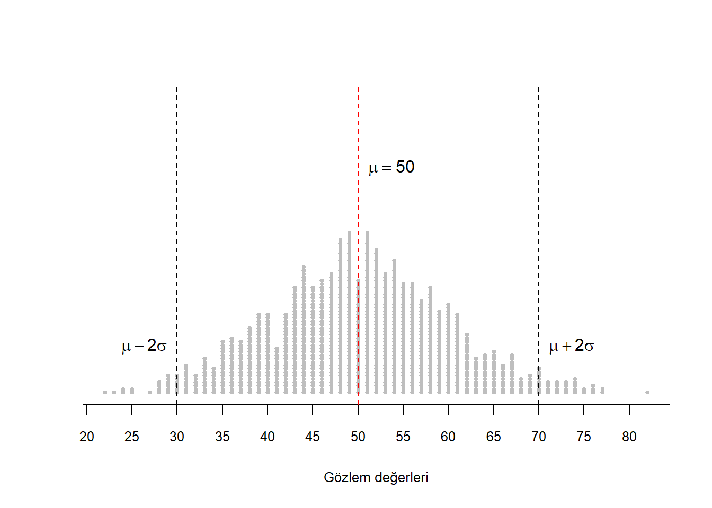
Şekil 3.33: Chebyshev teoreminin simetrik dağılım versiyonu: gözlemlerin %95’i 2 standart sapma içinde yer alır
Örnek 3.33 Ortalaması \(\mu=50\) ve varyansı \(\sigma^2=100\) olan normal dağılmış bir anakütlede gözlemlerin %95’i \(\mu-2\sigma=30\) ve \(\mu+2\sigma=70\) aralığı içinde yer alır. Şekil 3.33 bu aralığı göstermektedir. Gözlemlerin %68’i bir standart sapma içinde, yani, 40-60 aralığında değerler almaktadır. Gözlemlerin neredeyse tamamı 3 standart sapma içindedir (20-80).
Örnek 3.34 Türkiye’de il düzeyinde 2013 yılı mutluluk verilerini anakütle olarak düşünelim:
ortalama varyans stdsapma
61.15284 56.74699 7.53306
Dağılım hakkında ek bir bilgimiz olmadığını varsayalım. Buna göre mutluluk düzeyi ortalaması 61 ve standart sapması 7.5 olan bir dağılıma sahiptir. Buradan hareketle gözlemlerin yaklaşık %75’inin 46 ile 76 arasında değerler aldığını söyleyebiliriz. Simetrik bir dağılıma sahipse verilerin %95’i bu aralıkta yer alacaktır.
3.8.7 Değişkenlik Katsayısı
Değişkenlik katsayısı (coefficient of variation, CV) verideki değişkenliğin ortalamaya göre ne kadar büyük olduğunu gösteren istatistiksel bir ölçüttür. Varyasyon ya da değişkenlik katsayısı, standart sapmanın, ortalamaya oranının yüzdesi olarak hesaplanır ve genellikle yüzde ile ifade edilir. Bu katsayı, birimlerden bağımsız olduğu için farklı birimlere sahip verileri karşılaştırmak için uygundur.
Tanım 3.14 (Anakütle değişkenlik katsayısı) Anakütle standart sapmasının anakütle ortalamasına oranı olarak \[
CV = \%100\cdot \frac{\sigma}{\mu}
\tag{3.11}\] tanımlanır.
Tanım 3.15 (Örneklem değişkenlik katsayısı) Örneklem standart sapmasının örneklem ortalamasına oranı olarak \[
\widehat{CV} = \%100\cdot \frac{s}{\bar{x}}
\tag{3.12}\] tanımlanır.
Görece yüksek bir CV gözlemlerin ortalama göre daha fazla değişkenliğe sahip olduğunu gösterir. Veriler daha yayıktır.
Örnek 3.35 Bir grup öğrencinin iki sınava ait sonuçları şöyledir: \[
\mbox{1. Sınav:}\quad \bar{x}=74,\quad s=8
\]\[
\mbox{2. Sınav:}\quad \bar{x}=52,\quad s=15
\] Örneklem değişkenlik katsayılarını bulun ve yorumlayın.
Çözüm: \[
\mbox{1. Sınav:}\quad \widehat{CV} = \%100\cdot \frac{s}{\bar{x}}=\%100\cdot \frac{8}{74}=\%10.81
\]\[
\mbox{2. Sınav:}\quad \widehat{CV} = \%100\cdot \frac{s}{\bar{x}}=\%100\cdot \frac{15}{52}=\% 28.85
\] Buna göre 2. sınavın varyasyon katsayısı daha yüksektir. İkinci sınavda notlar ortalamaya göre daha büyük değişkenlik gösterir. Bu oranlar, standart sapmanın büyüklüğünün tek başına yeterli olmadığını vurgular. Örneğin, her iki sınavın standart sapması aynı olsaydı bile, ortalamaları farklı olduğu için değişkenlik katsayıları farklı olurdu. CV yardımıyla iki farklı sınavın performanslarını ve göreceli değişkenliklerini daha anlamlı bir şekilde kıyaslayabiliyoruz.
3.9 Biçim Ölçüleri
Verilerin dağılımının simetrikliği, uçlarda ve merkezdeki davranışları (örneğin basıklık ve kuyruk kalınlığı), görsel araçlarla birlikte analiz edildiğinde anlamlı bilgiler sağlar. Bu bölümde, dağılımın şeklini betimleyen istatistikleri inceleyeceğiz. Özellikle histogram, kutu grafiği ve yoğunluk grafikleriyle çalışırken, bu biçim ölçülerini de kullanacağız.
3.9.1 Çarpıklık
Çarpıklık, bir dağılımın simetrik olup olmadığı hakkında bilgi verir. Simetrik bir dağılımın sağ ve sol tarafı birbirine benzer bir şekle sahiptir. Böyle bir dağılım için medyan değeri ortalama değerine eşittir.
Örneklem çarpıklık katsayısı \[
c = \frac{m_3}{s^3} = \frac{{\frac{1}{n} \sum_{i=1}^{n} (x_i - \bar{x})^3}}{{\left( \frac{1}{n-1} \sum_{i=1}^{n} (x_i - \bar{x})^2 \right)^{3/2}}}
\tag{3.13}\] formülüyle hesaplanabilir. Burada \(c\) örneklem çarpıklık katsayısını, \(\bar{x}\) örneklem ortalamasını, \(s\) örneklem standart sapmasını göstermektedir. Bu istatistiğin payında yer alan ifade \(x\)’in örneklemdeki üçüncü momentidir: \(m_3\). Payda her zaman pozitif değerler alırken, pay sıfır, negatif ya da pozitif olabilir: - \(c=0\) ise dağılım simetrik, - \(c>0\) ise pozitif-çarpık ya da sağa çarpık, - \(c<0\) ise sola-çarpıktır (negatif çarpık).
Simetrik dağılımlar için \[
medyan=ortalama=mod
\] olur.
Sağa çarpık dağılımlar için \[
ortalama > medyan
\] olur. Bunun nedeni sağa çarpık dağılımlarda büyük değerlerin fazla ağırlığa sahip olmasıdır.
Sola çarpık dağılımlar için ise \[
medyan > ortalama
\] olur.
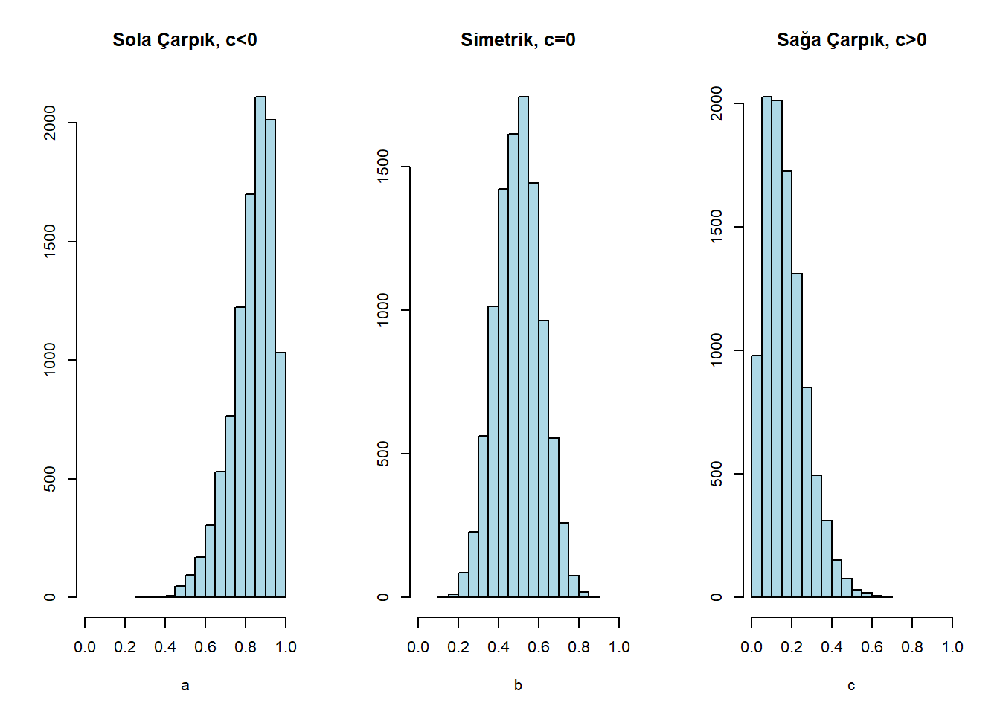
Şekil 3.34: Dağılımın çarpıklığı
Histogramın (dağılımın) biçimi ile çarpıklık katsayısı (\(c\)) ilişkilidir. Çarpıklık katsayısı \(c\)’nin 0 olması dağılımın simetrik olduğu duruma işaret eder (Şekil 3.34 (b)). Çarpıklık katsayısının pozitif olması, yani pozitif çarpıklık, dağılımın sağ kuyruğunun sola göre daha uzun olduğunu gösterir (Şekil 3.34 (c)). Negatif çarpıklık ise sol kuyruğun sağa göre daha uzun olduğunu ifade eder (Şekil 3.34 (a)).
Örnek 3.36 Aşağıdaki not ortalaması verisinde çarpıklık katsayısını R ile hesaplayınız.
Çarpıklık katsayısı yaklaşık \(-0.27\) olarak bulundu. Bu değer negatif olduğu için dağılımın hafif sola çarpık olduğunu söyleyebiliriz. Örneklem ortalaması (2.94) medyandan (3) biraz daha küçük bulunmuştur.
Örneklem çarpıklık katsayısını hesaplayan aşağıdaki gibi bir R fonksiyonu da yazabiliriz:
# örneklem çarpıklık katsayısı için fonksiyon# Bu fonksiyon, örneklemdeki üçüncü merkezi momenti ve standart sapmayı # kullanarak çarpıklık katsayısını hesaplarcarpiklik <-function(x) { n <-length(x) mean_x <-mean(x) sd_x <-sd(x) carpiklik <-sum((x - mean_x)^3) / (n * sd_x^3)return(carpiklik)}
Bu fonksiyonu kullanarak
carpiklik(gpa)
[1] -0.2658297
buluruz.
Örnek 3.37 Yukarıda yazdığımız carpiklik() fonksiyonunu kullanarak hanahalkı örneklemindeki aylık harcama değişkeninin çarpıklık katsayısını hesaplayınız. Örneklem ortalaması ve medyanını da hesaplayınız ve yorumlayınız.
carpiklik(hane_ornek$aylik_harcama)
[1] 5.98572
Aylık hane harcamasının çarpıklık katsayısı yaklaşık 5.99 olarak bulunmuştur. Bu değişken sağa çarpık bir dağılıma sahiptir. Başka bir ifadeyle hanelerin önemli bir kısmı düşük ve orta düzeydeki değerlerde yoğunlaşmıştır. Aylık harcama düzeyi arttıkça hane sayısı azalmaktadır.
Böyle bir dağılımda göreceli yüksek ve uç değerlerin varlığı ortalamanın yüksek çıkmasına neden olabilir. Bu değişken için
mean(hane_ornek$aylik_harcama)
[1] 3261.177
median(hane_ornek$aylik_harcama)
[1] 2584.41
örneklem ortalaması 3261.18 TL, örneklem medyanı ise 2584.41 TL olarak bulunmuştur. Tipik olarak ortalamanın medyandan büyük olması çarpıklığın pozitif olduğuna işaret eder. Genel olarak fertlerin ya da hanelerin gelir dağılımları sağ kuyruğun daha uzun olduğu, yani düşük ve orta gelirli gözlemlerin ağırlıkta olduğu bir davranışa sahiptir.
Çarpıklık dağılımın simetrikliğine ilişkin bilgi verir. Basıklık katsayısı ise kuyrukların (merkezden uzak değerlerin) dağılımına ilişkin bilgi içerir. Bu ölçüleri dağılım grafiklerini incelerken tekrar ele alacağız.
3.9.2 Basıklık
Basıklık, bir dağılımın tepesi etrafında nasıl yoğunlaştığını ve kuyrukların ne kadar uzun olduğunu belirten bir ölçüdür. Örneklem basıklık katsayısı \[
b = \frac{m_4}{s^4} = \frac{\frac{1}{n} \sum_{i=1}^{n} (x_i - \bar{x})^4}{\left(\frac{1}{n} \sum_{i=1}^{n-1} (x_i - \bar{x})^2\right)^2}
\tag{3.14}\] formülüyle hesaplanabilir (büyük örneklemlerde). Burada \(b\) örneklem basıklık katsayısını, \(\bar{x}\) örneklem ortalamasını, \(s\) örneklem standart sapmasını göstermektedir. Bu istatistiğin payında yer alan ifade \(x\)’in örneklemdeki dördüncü merkezi momentidir (\(m_4\)). Basıklık katsayısı her zaman pozitif değerler alır.
Basıklık katsayısı genellikle normal dağılıma göre değerlendirilir. Normal dağılım için basıklık 3 değerini alır. Eğer \(b>3\) ise dağılım normal dağılıma göre daha basıktır; yani kuyrukları daha kalındır (leptokurtosis). Tersi durumda \(b<3\) ise dağılım normale göre daha ince kuyruklara sahiptir.
Örnek 3.38 Basıklık katsayısını hesaplayan kurtosis_hesapla() isimli bir R fonksiyonu yazınız. bist100.rda veri kümesinde yer alan getiri değişkeni için basıklık katsayısını hesaplayınız.
# Basıklık (kurtosis) hesaplayan fonksiyonkurtosis_hesapla <-function(x) { n <-length(x) mean_x <-mean(x) m4 <-sum((x - mean_x)^4) / n s2 <-sum((x - mean_x)^2) / n kurtosis <- m4 / (s2^2)return(kurtosis)}
Basıklık katsayısı yaklaşık 8.07 olarak bulunmuştur. Bu değer 3’ten büyük olduğu için normal dağılıma göre getirinin daha kalın kuyruklara sahip olduğunu söyleyebiliriz.
(a) Basık (platykurtic) dağılım
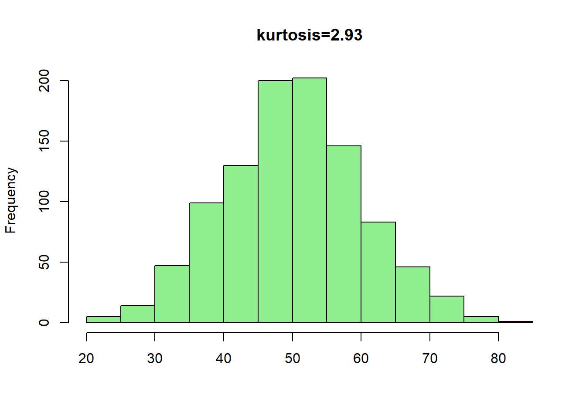
(b) Normal (mesokurtic) dağılım
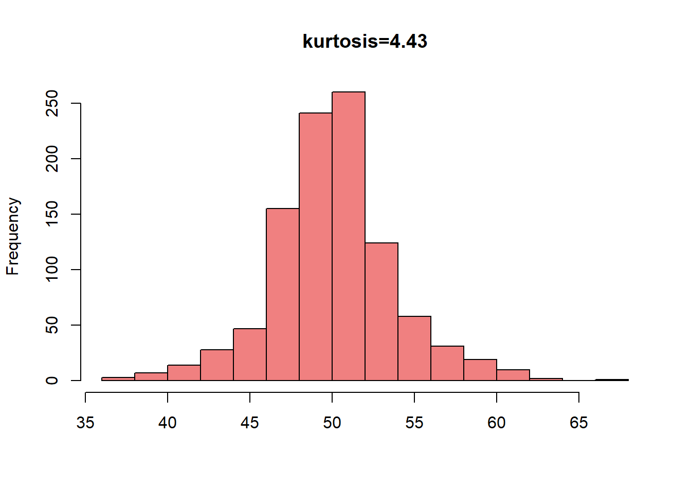
(c) Sivri (leptokurtic) dağılım
Şekil 3.35: Dağılımların basıklığı
Veri dağılımlarını tanımlarken önemli bir özellik de basıklıktır. Basıklık, dağılımın tepe noktasının sivriliği ya da basıklığı ile ilgilidir. Yani dağılımın uç değerlerde (kuyruklarda) yoğunlaşıp yoğunlaşmadığını gösterir. Basıklık, dağılımların uç noktalarındaki gözlem sayısına göre 3 temel kategoriye ayrılabilir:
Düz Dağılımlar (Platykurtic): Basık dağılımlar, merkezi bölge dışında çok fazla gözlem bulunmayan ve uç değerlerin sayısının az olduğu dağılımlardır. Bu tür dağılımlarda histogramın tepe noktası geniş ve düz olur (Şekil 3.35 (a)). Böyle dağılımlarda kurtosis (basıklık) katsayısı 3’ten küçüktür.
Normal Dağılımlar (Mesokurtic): Bir normal dağılım, basıklık açısından ortalama bir durumu gösterir. Dağılımın tepe noktası çok sivri ya da çok basık değildir. Normal dağılımın basıklık değeri 3 olarak tanımlıdır (Şekil 3.35 (b)).
Sivri Dağılımlar (Leptokurtic): Uç değerlerde daha fazla gözlem içeren, tepe noktası oldukça sivri olan dağılımlar ise leptokurtik olarak adlandırılır. Bu dağılımlarda uç bölgelerdeki veriler normal dağılıma göre daha yoğundur. Böyle dağılımlar için kurtosis katsayısı 3’ten büyüktür (Şekil 3.35 (c)).
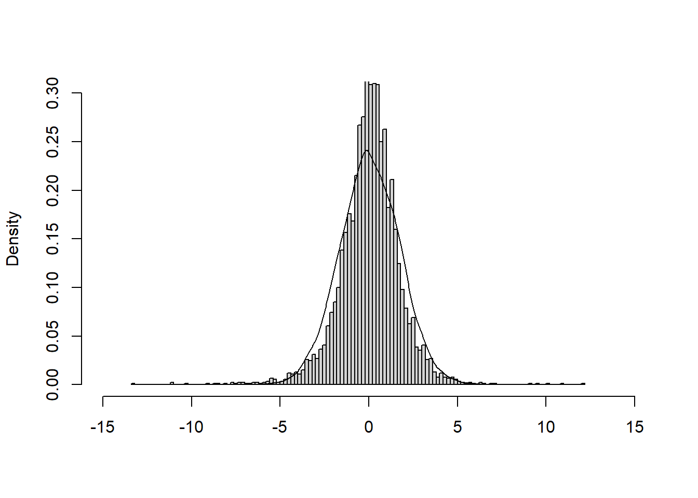
Şekil 3.36: BIST100 endeksinin günlük getirilerinin histogramı
Basıklık kavramı dağılımın kuyruklardaki ve merkezdeki davranışını incelemede önemlidir. Özellikle verinin uçlardaki davranışı, çeşitli analizler için önemli olabilir. Örneğin bazı finansal varlık getirilerinin dağılımı kalın kuyruklu (leptokurtik) olma eğilimindedir. Böyle bir dağılım, normal dağılıma göre daha sivri bir tepe ve daha kalın kuyruklara sahip olur. Şekil 3.36 BIST100 endeksinin günlük getirilerinin histogramını göstermektedir. Karşılaştırma amacıyla normal dağılımın yoğunluğu da grafiğe eklenmiştir. Bu getiriler için kurtosis değeri 8.07 olarak bulunmuştur. Normal dağılıma kıyasla, çoğu getiri değerinin ortalamaya yakın gerçekleştiğini, ancak uç olayların (aşırı kazanç veya kayıplar) normalden daha sık görüldüğünü söyleyebiliriz.
3.9.3 Keman grafiği
Keman çizimi, kutu-bıyık grafiğinin bir uzantısıdır ve veri dağılımını daha ayrıntılı bir şekilde görselleştirir. Bu grafik türü, son dönemde popülerleşmiştir ve verinin yoğunluk dağılımını da göstermektedir. Keman çiziminin bileşenleri şunlardır:
Kutu: Kutu-bıyık grafiğinde olduğu gibi Q1, Q2 (medyan) ve Q3’ü içerir.
Bıyıklar: Minimum ve maksimum değerleri gösterir.
Yoğunluk Eğrisi: Verinin dağılımını görselleştirir ve verinin yoğun olduğu bölgeleri daha geniş, seyrek olduğu bölgeleri ise daha dar gösterir.
Keman grafiği, verinin dağılımını ve yoğunluklarını detaylı bir şekilde anlamamıza yardımcı olur. Bu grafik türü, verinin merkezi eğilimi ve yayılımı, asimetri veya çarpıklık, aşırı değerler ve potansiyel veri anormallikleri hakkında bilgi verir.
Keman grafiği, kutu-bıyık grafiğine ek olarak verinin yoğunluk dağılımını da içerdiği için, veri analizi ve görselleştirme açısından daha zengin bilgiler sunar.
# Örnek veri setiveri <- x# Keman grafiğilibrary(ggplot2)df <-data.frame(veri = veri)ggplot(df, aes(x = veri, y ="")) +geom_violin(fill ="lightblue", color ="black") +geom_boxplot(width =0.3, fill ="gray") +theme_minimal() +labs(title ="Keman Grafiği", x ="Değerler", y ="")
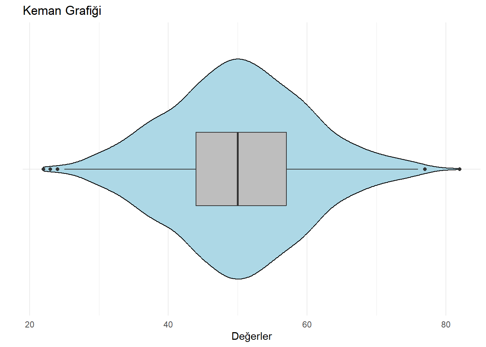
Şekil 3.37: Keman grafiği
Şekil 3.37 örnek bir keman grafiğini göstermektedir. Bu grafiğin oluşturulmasında ggplot2() paketi kullanılmıştır. Kutu çiziminin yanı sıra yoğunluk fonksiyonunu şekli de görülmektedir. Buradan haraketle dağılımın yaklaşık olarak simetrik olduğunu söyleyebiliriz.
# Örnek veri setiset.seed(123)x1 <-rnorm(100, mean =20, sd =5)x2 <-rnorm(100, mean =40, sd =5)x <-c(x1, x2)# Keman grafiğilibrary(ggplot2)df2 <-data.frame(x = x)ggplot(df2, aes(x = x, y ="")) +geom_violin(fill ="lightblue", color ="black") +geom_boxplot(width =0.3, fill ="gray") +theme_minimal() +labs(title ="Keman Grafiği", x ="Değerler", y ="")
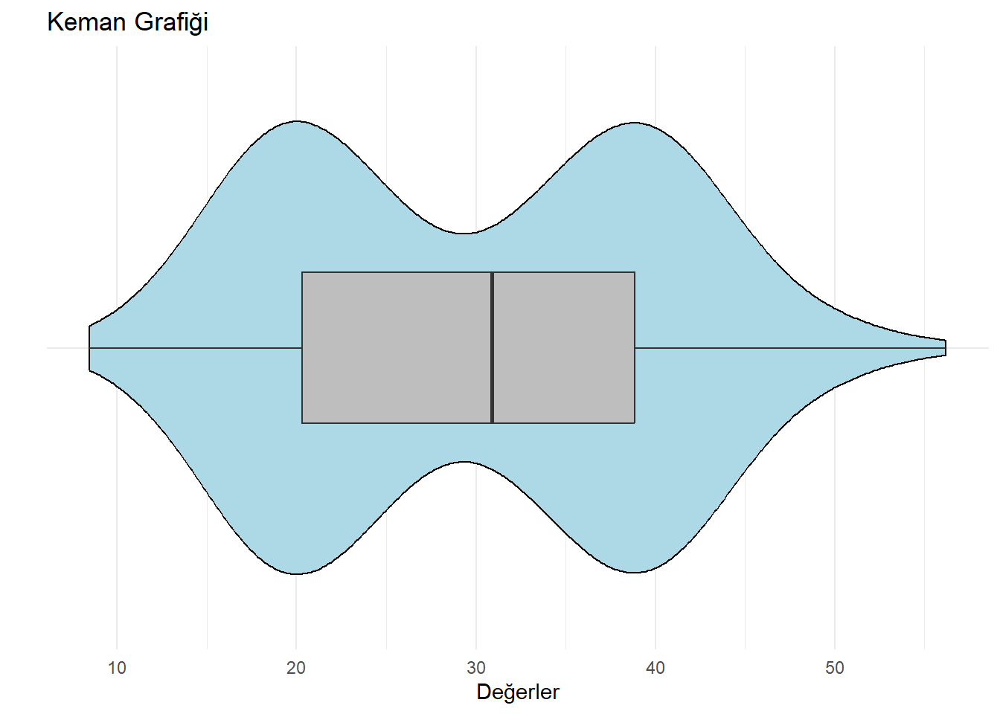
Şekil 3.38: Keman grafiği: iki tepeli dağılım
Kutu çiziminin bir eksikliği dağılımın simetrikliği dışında dağılımın şekli hakkında bilgi içermemesidir. Bazı dağılımlarda birden fazla tepe noktası olabilir. Keman çizimi özellikle bu durumda faydalı olabilir. Örnek olarak Şekil 3.38 iki tepeli bir yoğunluğa sahip olan bir değişkenin keman grafiğini göstermektedir.
3.10 İki Değişken Arasındaki İlişkinin Betimlenmesi
Şimdiye kadar bir değişkenin merkezi eğilimi, yayıklığı, ve dağılımının biçimine ilişkin çeşitli görsel ve sayısal araçları öğrendik. Bu bölümde iki değişken arasındaki ilişkinin nasıl görselleştirilebileceğini ve özetlenebileceğini öğreneceğiz.
Elimizde sürekli değerler alan iki değişkene ilişkin gözlemler olsun. Örneğin, 10 öğrencinin derse devam oranları ile notları aşağıdaki gibidir:
Bu veri kümesinde gözlem birimi öğrencilerdir. Her bir öğrenci için derse devam oranı ile not çiftini gözlemliyoruz. Birinci öğrencinin %80 devam oranı ile 100 üzerinden 75 başarıyla dersi tamamladığını görüyoruz. İkinci öğrenci %75 devam ve 78 puan, üçüncü öğrenci %70 devam ve 50 puan değerlerine sahiptir. Bu veri kümesini görsel olarak özetlemenin en pratik yolu X ve Y eksenlerinde bu değişkenlerin olduğu ve gözlem değerlerinin noktalarla ifade edildiği bir serpilme grafiği çizmektir:
plot(x = veri1$`Devam_oranı`, # x ekseniy = veri1$`Başarı`, # y eksenicol ="black", # renk = siyahpch =16, # sembol=içi dolu noktacex =1.2, # sembol büyüklüğümain ="", # başlıkylim=c(50,100), # y ekseninin sınırlarıxlim=c(50,100), # x ekseninin sınırlarıpanel.first =grid(), # grid çizgilerixlab ="Derse devam oranı, %", # x etiketiylab ="Başarı (100 puan üzerinden)"# y etiketi ) text(veri1$`Devam_oranı`, veri1$`Başarı`, labels = veri1$`Öğrenci`, # öğrenci no eklecex =0.9,pos =3)
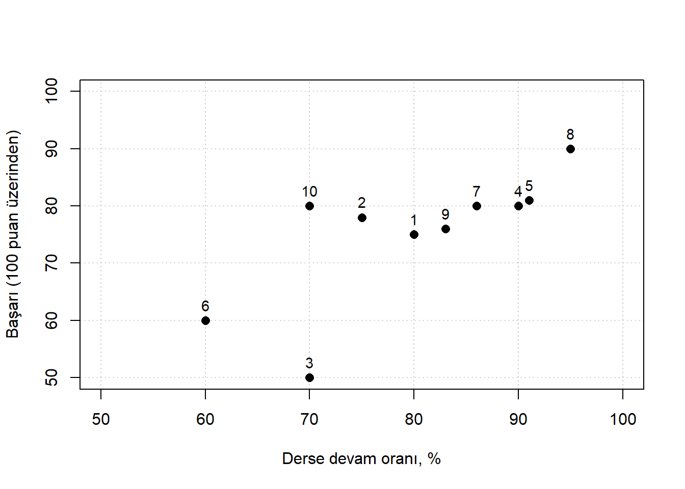
Şekil 3.39: Ders devam oranı ve başarı arasındaki serpilme çizimi
Şekil 3.39 öğrencilerin derse devam oranları ile başarı düzeyleri arasındaki ilişkinin serpilme çizimini göstermektedir. Gözlem çiftlerini betimleyen noktaların üzerindeki sayılar öğrencilerin numaralarıdır. Örneğin birinci öğrencinin %80 devam oranı ile 100 üzerinden 75 başarıyla dersi tamamladığını görüyoruz. İkinci öğrenci %75 devam ve 78 puan, üçüncü öğrenci %70 devam ve 50 puan değerlerine sahiptir. Bu grafikten hareketle devam oranı arttıkça başarının yükseldiğini söyleyebiliriz. İki değişken arasında aynı yönlü (pozitif) bir doğrusal ilişki olduğu görülmektedir.
Örnek 3.39 hane_ornek veri kümesinde yer alan aylik_gelir ve aylik_harcama değişkenlerinin serpilme çizimini oluşturunuz.
Çözüm
load("Data/hane_ornek.RData")plot(x = hane_ornek$aylik_gelir, y = hane_ornek$aylik_harcama, col ="black", panel.first =grid(),xlab ="Aylık hane geliri, TL", ylab ="Aylık hane harcaması, TL" )
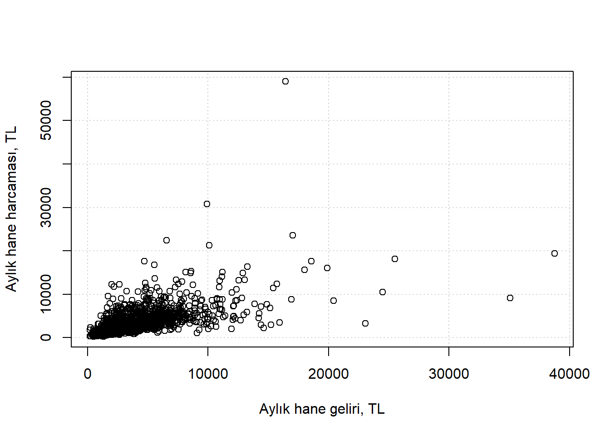
Şekil 3.40: Serpilme grafiği: aylık gelir ve harcama
Şekil 3.40 hanehalkı aylık ortalama gelir ve harcama değerlerinin serpilme grafiğini göstermektedir. Genel olarak gelir düzeyi ile harcama arasında pozitif bir ilişki olduğu söylenebilse de grafiğin sol alt kısmında, gelir ve harcamanın düşük olduğu alanlarda veri noktalarının yoğunlaştığını görülmektedir. Bu, daha fazla hanenin düşük gelir ve düşük harcama seviyelerinde olduğunu gösterir. Gerçekten de özet istatistiklerden
summary(hane_ornek$aylik_harcama)
Min. 1st Qu. Median Mean 3rd Qu. Max.
215 1708 2584 3261 3948 58994
summary(hane_ornek$aylik_gelir)
Min. 1st Qu. Median Mean 3rd Qu. Max.
184.7 1883.2 2863.1 3641.4 4529.7 38757.9
hanelerin %75’inin 4530 TL’den az gelire sahip oldukları görülebilir. Şekil 3.41 gelir düzeyi 5000 TL’den az olan alt küme için serpilme çizimini göstermektedir. Bu grafikte gelir ve harcamanın düşük olduğu bölgelerde veri noktalarının yoğunlaşması daha belirgin hale gelmiştir. Gelirine oranla harcaması çok yüksek hanelerin de olduğu görülmektedir.
hane_ornek_alt1 <-subset(hane_ornek, aylik_gelir<5000)plot(x = hane_ornek_alt1$aylik_gelir, y = hane_ornek_alt1$aylik_harcama, col ="black", panel.first =grid(),xlab ="Aylık hane geliri, TL", ylab ="Aylık hane harcaması, TL" )
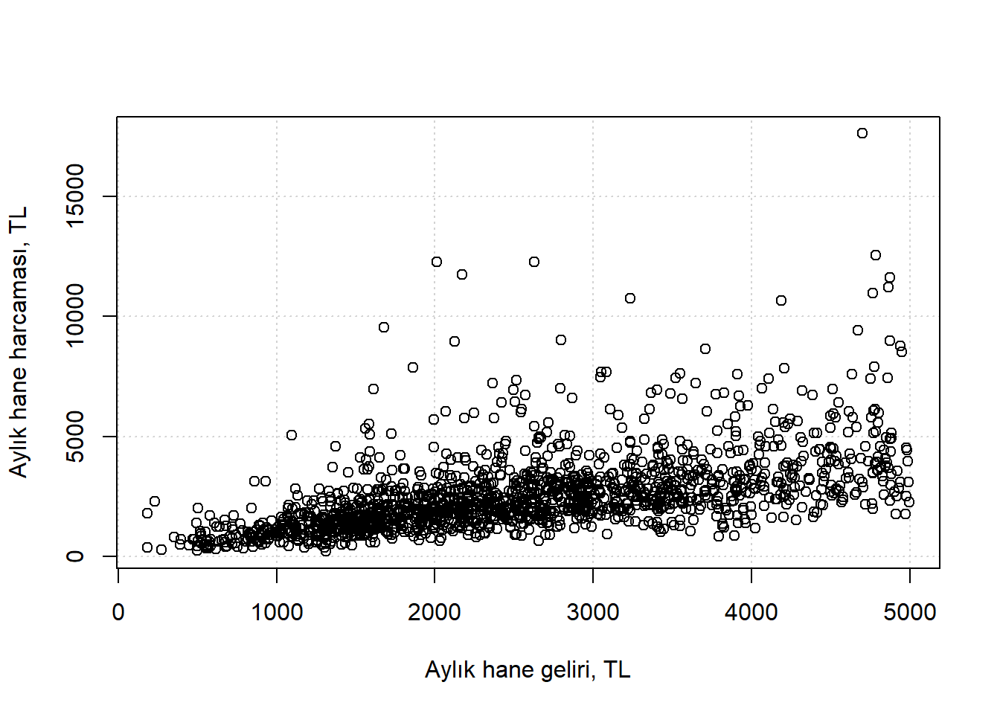
Şekil 3.41: Aylık geliri 5000 TL’den az olan hanelerde gelir ve harcama
Örnek 3.40 (Serpilme ve dağılım grafiği) Serpilme çizimine değişkenlerin dağılımlarını da eklemek mümkündür. Bunun için car paketinde yer alan scatterplot() fonksiyonu kullanılabilir:
Şekil 3.42 bu veri kümesinin serpilme çizimini x ve y değişkenlerinin kutu çizimleriyle birlikte vermektedir. Bu iki değişken arasında pozitif yönlü doğrusal bir ilişki olduğunu görüyoruz. Ayrıca, x’in merkezinin 10 civarında ve dağılımının simetrik olduğunu söyleyebiliriz. Benzer şekilde y’nin merkezi 30 civarında ve simetrik bir biçime sahiptir.
Serpilme çizimlerini inceleyerek değişkenler arasındaki ilişkinin yönü hakkında çıkarımda bulunabiliriz. Görsel araçlar, verilerin faydalı bir özetini sunar, ancak bu özetler sayısal özetlerle desteklenmelidir. İki sayısal değişken arasındaki ilişkiyi anlamak için kullanılan temel istatistiksel araçlar kovaryans ve korelasyondur. Kovaryans, iki değişkenin birlikte nasıl değiştiğini ölçer, pozitif veya negatif yönlü ilişkiler hakkında bilgi verir. Korelasyon ise, bu ilişkinin gücünü ve yönünü, ölçekten bağımsız olarak ifade eder. Bu sayede, değişkenler arasındaki ilişkiyi daha açık bir şekilde ortaya koyabiliriz.
3.10.1 Kovaryans
Kovaryans, iki değişkenin birlikte nasıl değiştiğini ölçen bir istatistiktir. İki değişkenin ortalamalarından sapmalarının çarpımlarının ortalaması olarak hesaplanır. Kovaryans pozitifse, değişkenler birlikte artma eğilimindedir; negatifse, bir değişken artarken diğeri azalma eğilimindedir.
Tanım 3.16 (Anakütle kovaryansı) İki değişken arasındaki anakütle kovaryansı \[
\sigma_{xy} \equiv \text{Cov}(X, Y) = \frac{1}{N} \sum_{i=1}^{N} (X_i - \mu_x)(Y_i - \mu_y)
\tag{3.15}\] olarak tanımlanır ve \(\sigma_{xy}\) ya da \(\mbox{Cov}(X, Y)\) ile gösterilir. Burada \(N\) anakütlenin (evrenin) boyutunu, \(\mu_x\) ve \(\mu_y\) bu değişkenlerin anakütle ortalamalarını ifade etmektedir. \(\mbox{Cov}(X, Y)\) pozitif, negatif, ya da 0 olabilir.
Tanım 3.17 (Örneklem kovaryansı) Bir anakütleden çekilmiş \(n\) boyutlu bir veri kümesinden hareketle örneklem kovaryansını tanımlayabiliriz: \[
\hat{\sigma}_{xy} \equiv \widehat{\text{Cov}(x, y)} = \frac{1}{n-1} \sum_{i=1}^{n} (x_i - \bar{x})(y_i - \bar{y})
\tag{3.16}\] Burada \(x_i\) ve \(y_i\), rassal değişkenlerin i. gözlemlerini, \(\bar{x}\) ve \(\bar{y}\) bu değişkenlerin örneklem ortalamalarını, ve \(n\) gözlem sayısını ifade etmektedir. Örneklem kovaryansı bilinmeyen anakütle kovaryansını tahmin etmekte kullanılabilir.
Tablo 3.6: Kovaryans hesaplama tablosu: derse devam ve başarı
Öğrenci
\(x\)
\(y\)
\(x - \bar{x}\)
\(y - \bar{y}\)
\((x - \bar{x}) \times (y - \bar{y})\)
1
80
75
0
0
0
2
75
78
-5
3
-15
3
70
50
-10
-25
250
4
90
80
10
5
50
5
91
81
11
6
66
6
60
60
-20
-15
300
7
86
80
6
5
30
8
95
90
15
15
225
9
83
76
3
1
3
10
70
80
-10
5
-50
Toplam
800
750
0
0
859
Tablo 3.6 derse devam oranı ile başarı düzeyi arasındaki kovaryansı hesaplamaktadır. Bu tabloda \(x\) derse devam oranını, \(y\) başarı düzeyini (not) göstermektedir. Tablonun altındaki toplamlardan hareketle devam oranının ortalamasının \(\bar{x}=80\), başarı düzeyinin ortalamasının \(\bar{y}=75\) olduğu görülebilir. Dördüncü ve beşinci sütunlarda ortalamadan farklar hesaplanmıştır. Son sütunda ise ortalamalardan farkların çarpımları yer almaktadır. Buradan hareketle bu iki değişken arasındaki örneklem kovaryansı kolayca hesaplanabilir:
R’da cov() fonksiyonu ile de bu hesaplama yapılabilir:
cov(veri1$Devam_oranı, veri1$Başarı)
[1] 95.44444
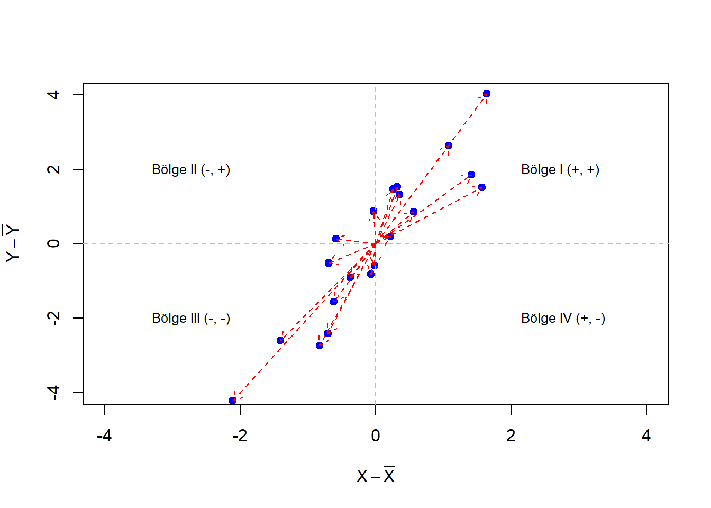
Şekil 3.43: Pozitif kovaryans
İki değişken arasındaki kovaryansın işareti ilişkinin yönü hakkında bilgi verir. Ancak büyüklüğü ölçü birimlerine bağlı olduğu için genellikle yorumlanmaz. Kovaryans formülünde yer alan ortalamalardan farkların çarpımının işareti ilişkinin yönünü belirler. Şekil 3.43 kovaryansın pozitif işaretli olduğu durumu görselleştirmektedir. Bu grafikte X ve Y eksenleri ortalamalardan farkları göstermektedir. Buna göre X ortalamanın üzerindeyken, yani ortalama farkı pozitifken Y de ortalamanın üzerinde olma eğilimindeyse (bölge 1) her iki fark pozitif işaretli ve çarpımları da pozitif işaretli olur. Diğer durumda X ortalamanın altındayken Y de ortalamanın altında olma eğilimindeyse her iki işaret negatif ve çarpımları pozitif olur. Sonuç olarak ortalamada bu değişkenlerin aynı yönde hareket ettikleri yani kovaryanslarının pozitif olduğu söylenebilir.
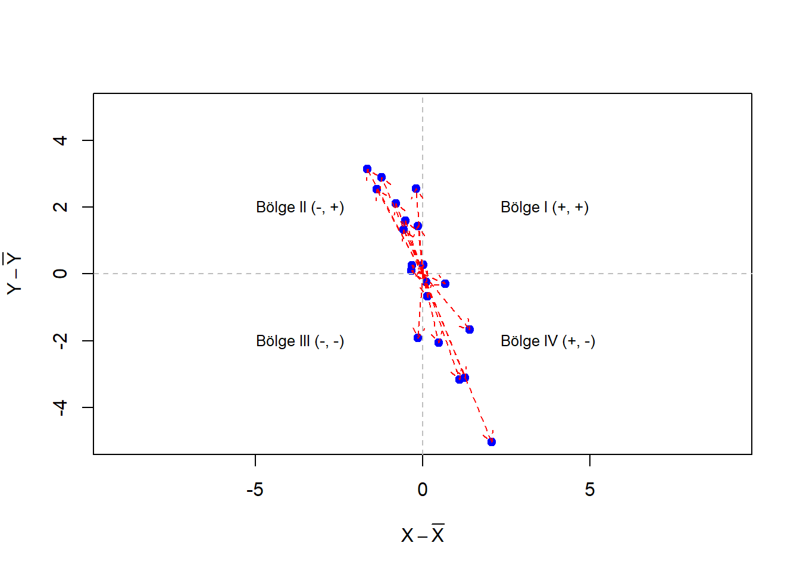
Şekil 3.44: Negatif kovaryans
Şekil 3.44 ise tersi durumu göstermektedir. X ortalamanın altındayken Y kendi ortalamasının üzerinde değerler alıyorsa (bölge II) çarpımın işareti negatif olacaktır. Diğer durumda X ortalamanın üzerindeyken Y ortalamanın altındaysa (bölge IV) çarpımın işareti negatif olacaktır. Tüm gözlem noktalarında eğilim bu şekildeyse kovaryans negatif işaretli olur. Merkezlere olan uzaklık büyüdükçe kovaryans değeri de mutlak olarak büyüyecektir.
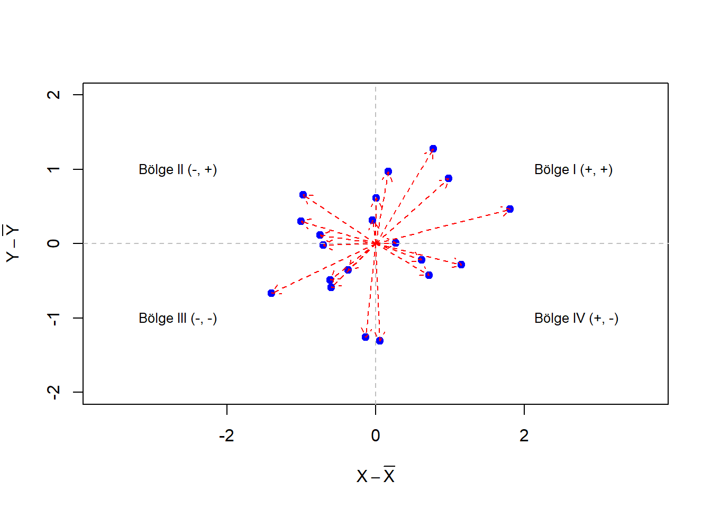
Şekil 3.45: Sıfır kovaryans
Şekil 3.45 X ile Y arasında ilişkinin olmadığı durumu göstermektedir. Bu durumda ortalamadan farkların orijin çevresinde tesadüfi bir şekilde dağıldığına dikkat ediniz.
3.10.2 Korelasyon
Korelasyon, iki değişken arasındaki lineer ilişkinin gücünü ve yönünü ölçen bir istatistiktir. Pearson korelasyon katsayısı en yaygın kullanılan korelasyon ölçüsüdür. Değerler -1 ile +1 arasında değişir. +1 mükemmel pozitif ilişkiyi, -1 mükemmel negatif ilişkiyi, 0 ise ilişkisizliği ifade eder.
Tanım 3.18 (Anakütle korelasyon katsayısı) Bir anakütle için iki değişken arasındaki korelasyon katsayısı \[
\rho_{xy} = \frac{\sigma_{xy}}{\sigma_x \sigma_y} \equiv \frac{\text{Cov}(X, Y)}{\sigma_x \sigma_y}
\tag{3.17}\] formülüyle hesaplanır. Burada \(\sigma_{xy}\) iki değişken arasındaki anakütle kovaryansını, \(\sigma_x\) ve \(\sigma_y\) bu değişkenlerin anakütle standart sapmalarını ifade etmektedir.
Tanım 3.19 (Örneklem korelasyon katsayısı) Örneklem korelasyon katsayısı aşağıdaki gibi tanımlanır: \[
r_{xy}\equiv \hat{\rho}_{xy} = \frac{\widehat{\text{Cov}(X, Y)}}{s_x s_y}
\] Burada \(\widehat{\text{Cov}(X, Y)}\) iki değişken arasındaki örneklem kovaryansını, \(s_x\) ve \(s_y\) bu değişkenlerin örneklem standart sapmalarını ifade etmektedir.
Örneklem korelasyon katsayısı \(r_{xy}\), iki sayısal değişken arasındaki doğrusal ilişkinin gücünü ve yönünü ölçen bir istatistiktir. Her zaman \(-1\) ile \(1\) arasında bir değer alır:
\(r = 1\): Mükemmel pozitif doğrusal ilişki. Bir değişken arttıkça diğer değişken de artar.
\(r = -1\): Mükemmel negatif doğrusal ilişki. Bir değişken arttıkça diğer değişken azalır.
\(r = 0\): Değişkenler arasında doğrusal bir ilişki yoktur.
Korelasyonun işareti kovaryansın işaretine bağlıdır. Pozitif korelasyon durumunda X ve Y değerleri arttıkça, veri noktaları ortalama etrafında yukarı doğru bir eğim gösterir ve farkların çarpımı pozitif olur. Negatif korelasyon durumunda ise X değeri arttıkça Y değerleri azalır; veri noktaları ortalama etrafında aşağı doğru bir eğim gösterir ve farkların çarpımı negatif olur. Sıfır korelasyon durumunda ise X ve Y arasında belirgin bir ilişki yoktur. Veri noktaları etrafında rastgele dağılır ve farkların çarpımının ortalaması sıfıra yakın olma eğilimindedir.
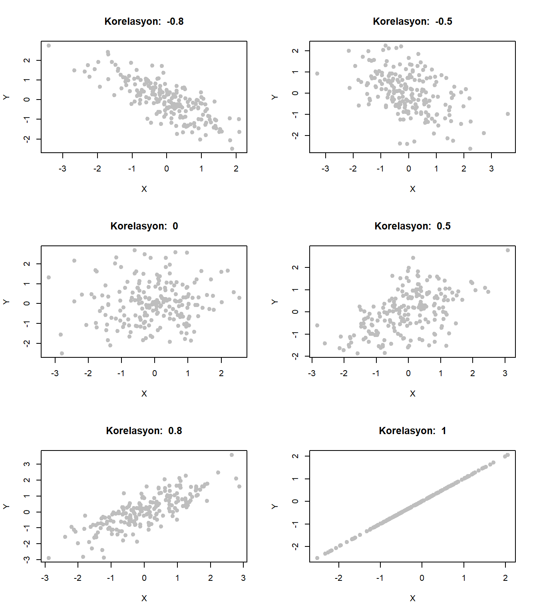
Şekil 3.46: X ile Y arasındaki korelasyon ve serpilme çizimleri
Korelasyon katsayısı \(1\)’e ya da \(-1\)’e yaklaştıkça doğrusal ilişkinin güçlendiğini, \(0\)’a yaklaştıkça zayıfladığını söyleyebiliriz. Şekil 3.46 farklı korelasyon değerlerine sahip değişken çiftlerinin serpilme çizimlerini göstermektedir. Korelasyon katsayısı azaldıkça veya arttıkça, veri noktalarının doğrusal bir çizgi etrafında daha sıkı bir şekilde kümelendiği görülebilir. Özellikle korelasyonun 0 olduğu grafikte, veri noktalarının belirgin bir doğrusal ilişki göstermediğine dikkat ediniz. Özetlersek, bu grafikte
Korelasyon \(-0.8\): Güçlü negatif ilişki. X değeri arttıkça Y değeri azalma eğilimindedir.
Korelasyon \(-0.5\): Orta düzeyde negatif ilişki. X değeri arttıkça Y değeri genel olarak azalmaktadır, ancak ilişki daha zayıftır.
Korelasyon \(0\): Hiçbir doğrusal ilişki yoktur. X ve Y değerleri arasında belirgin bir ilişki gözlemlenmemektedir.
Korelasyon \(0.5\): Orta düzeyde pozitif ilişki. X değeri arttıkça Y değeri genel olarak artmaktadır.
Korelasyon \(0.8\): Güçlü pozitif ilişki. X değeri arttıkça Y değeri artma eğilimindedir.
Korelasyon \(1\): Mükemmel pozitif doğrusal ilişki. X ve Y değerleri tamamen doğrusal bir ilişki içerisindedir; X değeri arttıkça Y değeri de sabit bir oranda artmaktadır.
Örnek 3.41 Tablo 3.6 verisinden hareketle derse devam oranı ile başarı notu arasındaki Pearson korelasyon katsayısını hesaplayınız.
Çözüm
Örneklem korelasyon katsayısını hesaplayabilmek için kovaryansı ve değişkenlerin standart sapmalarını bulmamız gerekir. Örneklem kovaryansını 95.4 olarak bulmuştuk. Derse devam oranının örneklem standart sapması 11.136 ve başarı oranının standart sapması 11.528 olarak bulunabilir. Böylece örneklem korelasyon katsayısı
\[
r_{xy} = \frac{\widehat{\text{Cov}(X, Y)}}{s_x s_y} = \frac{95.4}{(11.136)(11.528)} = 0.74
\] olur. cor() fonksiyonu ile
cor(veri1$Devam_oranı, veri1$Başarı)
[1] 0.7435248
Buradan hareketle derse devam oranı ile başarı düzeyi arasında güçlü pozitif bir ilişki olduğunu söyleyebiliriz.
Örnek 3.42 (Görselleştirmenin önemi, Anscombe veri kümesi)
Şekil 3.47 bu veri kümelerini göstermektedir. Her bir veri kümesi aynı ortalama ve varyansa ve benzer korelasyon katsayısına sahiptir. Ancak, görsel olarak incelendiğinde bu verilerin oldukça farklı dağılımlar ve ilişkiler sergilediği görülmektedir.
Veri 1: x1 ve y1 arasında pozitif yönde doğrusal bir ilişki bulunmaktadır.
Veri 2: x2 ve y2 arasında doğrusal olmayan (kuadratik) bir ilişki vardır.
veri 3: x3 ve y3 doğrusal bir ilişkiye sahip gibi görünmekle birlikte bir uç değer vardır.
Veri 4: x4, bir değer dışında, aynı değere sahiptir. Bu değer dışlanırsa (19) x4’ün varyansı sıfır olur.
Anscombe’nin Dörtlüsü, sadece korelasyon katsayısına dayanarak değişkenler arasındaki ilişkiyi anlamanın sınırlamalarını ortaya koymaktadır. Korelasyon katsayısı, iki değişken arasındaki doğrusal ilişkiyi ölçer. Ancak, bazı değişkenler doğrusal olmayan ilişkiler gösterebilir. Bu durumlarda, doğrusal olmayan ilişkileri tanımlamak ve analiz etmek için başka yöntemler kullanmak gerekebilir. Ayrıca, uç değerler korelasyon katsayısını önemli ölçüde etkileyebilir. Korelasyon katsayısı değişkenlerin dağılımı hakkında bilgi vermez. Aynı korelasyon katsayısına sahip olsalar da, yukarıda gösterildiği gibi, dağılımda önemli farklılıklar olabilir.
3.10.3 Korelasyon katsayısının geometrik anlamı
Korelasyon, iki vektör arasındaki açının kosinüsü olarak düşünülebilir. \(\mathbf{a}\) ve \(\mathbf{b}\) iki vektör olsun. Bu iki vektörün iç çarpımı \[
\mathbf{a} \cdot \mathbf{b} = \sum_{i=1}^{n} a_i b_i
\] ve vektör normları (ya da uzunlukları) \[
\| \mathbf{a} \| = \sqrt{\sum_{i=1}^{n} a_i^2}
\] ve \[
\| \mathbf{b} \| = \sqrt{\sum_{i=1}^{n} b_i^2}
\] olarak tanımlıdır. İki vektör arasındaki açının kosinüsü iç çarpım ve uzunluklar ile aşağıdaki gibi tanımlanabilir: \[
\cos(\theta) = \frac{\mathbf{a} \cdot \mathbf{b}}{\| \mathbf{a} \| \| \mathbf{b} \|}
\]\(0\leq \theta\leq \pi\) iki vektör arasındaki açıdır. Kosinüs fonksiyonunun tanımı gereği \(\cos(\theta)\) her zaman \(-1\) ile \(1\) arasında değerler alır.
\(x\) ve \(y\) gözlem değerlerini iki vektör olarak düşünülebilir. Ortalamadan farklar vektörlerini \(\mathbf{a} = (x_i - \bar{x})\) ve \(\mathbf{b} = (y_i - \bar{y})\) şeklinde tanımlarsak \[
r = \frac{\sum_{i=1}^{n} (x_i - \bar{x})(y_i - \bar{y})}{\sqrt{\sum_{i=1}^{n} (x_i - \bar{x})^2} \sqrt{\sum_{i=1}^{n} (y_i - \bar{y})^2}}\equiv \cos(\theta)
\] korelasyon katsayısının \(\cos(\theta)\) olduğunu görebiliriz.
\(r = 1\): İki değişken arasında mükemmel pozitif doğrusal ilişki vardır. Bu durumda, iki vektör aynı yöndedir ve açı \(\theta = 0\)’dır, dolayısıyla \(\cos(0) = 1\).
\(r = -1\): İki değişken arasında mükemmel negatif doğrusal ilişki vardır. Bu durumda, iki vektör zıt yöndedir ve açı \(\theta = \pi\) ya da \(180^\circ\)’dir. Dolayısıyla \(\cos(\pi) = -1\) olur.
\(r = 0\): İki değişken arasında doğrusal bir ilişki yoktur. Bu durumda, iki vektör arasındaki açı \(\theta = \frac{\pi}{2}\) ya da \(90^\circ\)’dir ve \(\cos\left(\frac{\pi}{2}\right) = 0\) olur.
Cauchy-Schwarz Eşitsizliği: İki vektör arasındaki nokta çarpımı, bu vektörlerin normlarının çarpımına eşit veya daha küçüktür: \[
\left| \sum_{i=1}^{n} (x_i - \bar{x})(y_i - \bar{y}) \right| \leq \sqrt{\sum_{i=1}^{n} (x_i - \bar{x})^2} \sqrt{\sum_{i=1}^{n} (y_i - \bar{y})^2}
\]
Burada, eşitlik durumu, iki değişken arasında tam doğrusal bir ilişki olduğunda (pozitif veya negatif) ortaya çıkar.
3.11 Çözümlü Alıştırmalar
Alıştırma 3.1 Bir sayısal vektörü girdi olarak alan ve medyanı hesaplayan bir R fonksiyonu yazınız.
Çözüm
# Medyanı hesaplayan fonksiyon# x = nümerik vektörmedyan <-function(x) { # Girdinin sayısal olup olmadığını kontrol etmeif (!is.numeric(x)) {stop("Girdi sayısal bir vektör olmalıdır.") } sirali_veriler <-sort(x) # sırala n <-length(sirali_veriler) # verinin boyutu if (n %%2==1) {# Tek sayıdaki veri seti için medyan <- sirali_veriler[(n+1)/2] } else {# Çift sayıdaki veri seti için ortadaki1 <- sirali_veriler[n/2] ortadaki2 <- sirali_veriler[(n/2)+1] medyan <- (ortadaki1 + ortadaki2)/2 }return(medyan)}medyan(gpa)
[1] 3
medyan(gpa2)
[1] 2.9
Burada (n %% 2) işlemi \(n\)’in 2’ye bölümünden kalanı verir. Çift sayılar için 0, tek sayılar için ise 1 değerini alır.
Alıştırma 3.2
Aşağıda verilen iki veri kümesini kullanarak ortalama, medyan, Q1, Q3, IQR ve aralıkları hesaplayın. İşlemleri önce kendiniz bir hesap makinesi yardımıyla yapınız. Daha sonra R programını kullanarak sonuçları karşılaştırınız.
Her iki veri kümesinin ortalaması aynıdır, medyan değerleri birbirine çok yakındır. Ancak ikinci veri setinin değişkenliği daha fazladır. Merkezi yayıklığı ölçen IQR ikinci veri kümesinde 8.75, birincisinde ise 2 olarak bulunmuştur.
Alıştırma 3.3 Rassal sayılar çekilerek bir veri kümesi oluşturulmuştur:
y x1 x2 grup
1 18.60331 4.327429 -0.56832525 C
2 18.44227 4.723787 0.20550697 C
3 24.42217 6.870450 -0.19735350 C
4 13.84834 5.084610 -0.27803408 A
5 15.55670 5.155145 -0.76129485 A
6 24.90853 7.058078 -0.03602218 C
Buna göre aşağıdaki soruları yanıtlayın.
Bu veri kümesinde yer alan x1, x2 ve y değişkenlerinin özet istatistiklerini hesaplayın ve yorumlayın.
y’nin özet istatistiklerini gruplara göre hesaplayın ve yorumlayın.
Gruplara göre kutu çizimlerini oluşturun ve yorumlayın.
Çözüm:
Değişkenlenlerin özet istatistikleri
summary(df)
y x1 x2 grup
Min. : 6.04 Min. :2.229 Min. :-1.64260 Length:100
1st Qu.:13.72 1st Qu.:4.407 1st Qu.:-0.64088 Class :character
Median :17.54 Median :5.074 Median :-0.18066 Mode :character
Mean :16.88 Mean :5.108 Mean :-0.08604
3rd Qu.:19.78 3rd Qu.:5.830 3rd Qu.: 0.37427
Max. :27.50 Max. :7.625 Max. : 2.59283
Ortalama ve medyan değerlerinden hareketle y ve x1’in yaklaşık olarak simetrik, x2’nin ise hafif sağa çarpık olduğunu söyleyebiliriz.
Gruplara göre y’nin betimsel istatistikleri:
summary(df$y[grup=="A"])
Min. 1st Qu. Median Mean 3rd Qu. Max.
6.04 8.90 11.14 11.83 13.85 22.14
summary(df$y[grup=="B"])
Min. 1st Qu. Median Mean 3rd Qu. Max.
7.794 16.054 18.067 17.719 19.538 24.500
summary(df$y[grup=="C"])
Min. 1st Qu. Median Mean 3rd Qu. Max.
15.59 18.75 20.31 21.17 23.58 27.50
Bu sonuçlara göre grup A en düşük ortalama ve medyana, grup C ise en yüksek ortalama ve medyana sahiptir. Grup B ikisinin arasındadır. Bunun yanı sıra birinci ve üçüncü kartillerin de benzer şekilde A’dan C’ye doğru arttığını görüyoruz.
Gruplara göre kutu çizimi:
boxplot(formula = y ~ grup,data = df, at =c(0, 0.5, 1.0), ylim=c(0,30),horizontal =FALSE, frame.plot =FALSE, boxwex = .3, # daha dar kutuboxfill ="gray80",whiskcol ="gray70", boxcol ="grey70",outcol ="grey70", whisklty =1,outpch =20, # uç değerler nokta outcex =0.8, # uç değer boyutu medlwd =1.0)
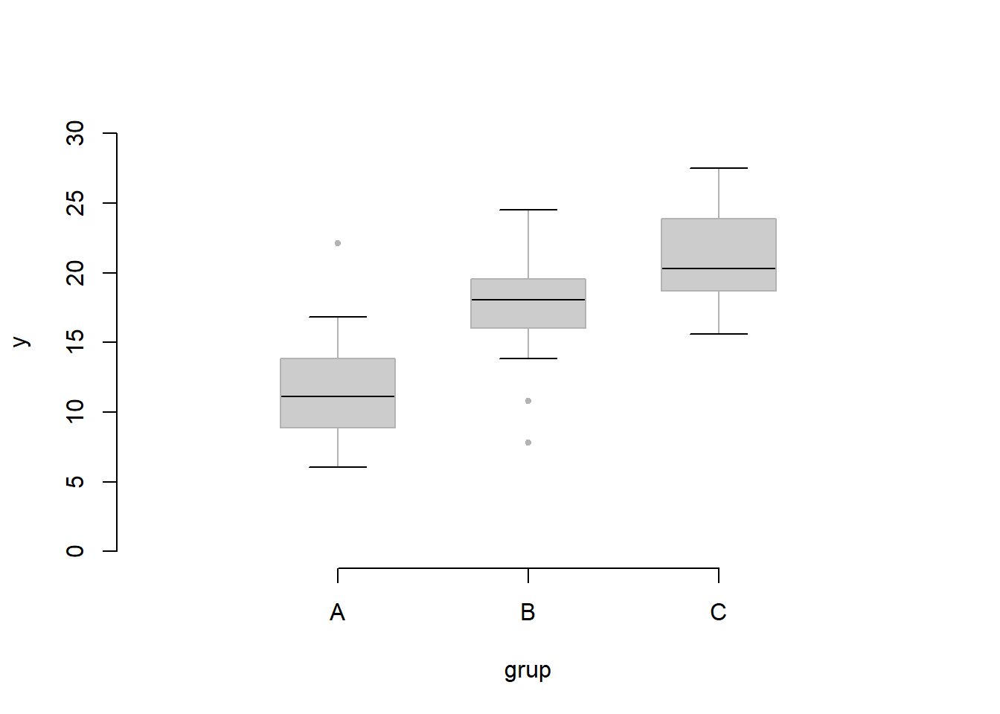
Önceki kısımda belirttiğimiz gibi y’nin medyanı grup C’de en yüksek değeri almaktadır. A grubunda y yaklaşık olarak simetrik dağılırken, B grubunda hafif sola, C grubunda ise sağa çarpıktır.
Bu grafiği plot() fonksiyonu ile de çizebiliriz:
plot(as.factor(df$grup), df$y)
Alıştırma 3.4 mtcars veri kümesinde yer alan araç ağırlığı (wt) ve yakıt verimliliği (mpg, galon başına mil) değişkenlerinin kovaryansını ve korelasyon katsayısını hesaplayınız. Serpilme grafiğini oluşturarak yorumlayınız.
Çözüm:
# mtcars veri setini yükleyelimdata(mtcars)# Kovaryans ve korelasyon hesaplamacov_value <-cov(mtcars$mpg, mtcars$wt)cor_value <-cor(mtcars$mpg, mtcars$wt)cov_value
[1] -5.116685
cor_value
[1] -0.8676594
# Dağılma diyagramı oluşturma ve kovaryans ve korelasyon değerlerini eklemeplot(mtcars$wt, mtcars$mpg, main=paste("Serpilme grafiği: Araç Ağırlığı ve Yakıt Verimliliği\n","Kovaryans: ", round(cov_value, 2), ", Korelasyon: ", round(cor_value, 2)),xlab="Ağırlık (1000 lbs)", ylab="Mil/Gallon (mpg)",pch=19)
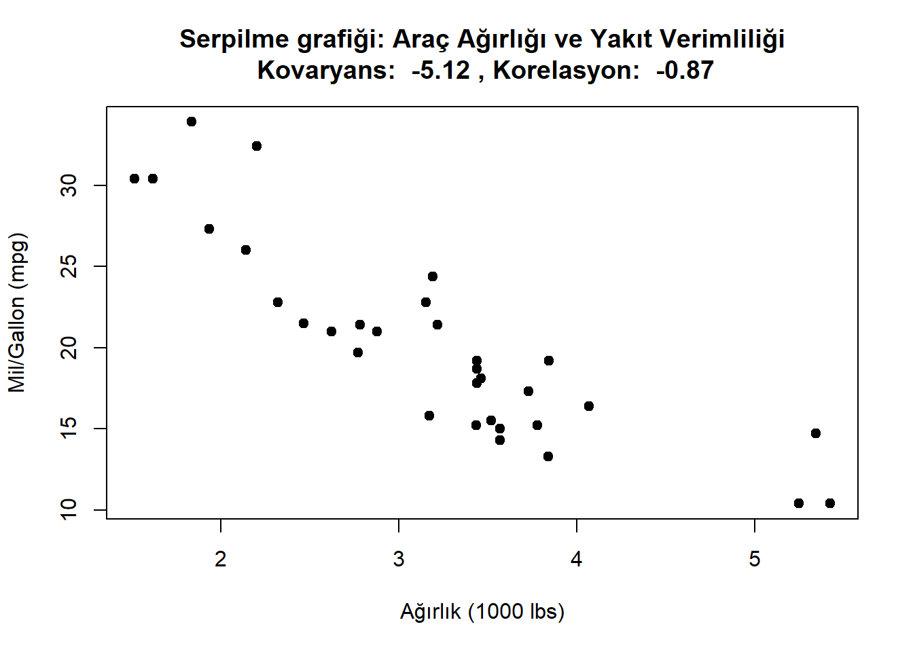
Bu sonuçlara göre otomobilin ağırlığı ile yakıt verimliliği arasında negatif yönlü güçlü bir ilişki olduğunu söyleyebiliriz (korelasyon katsayısı \(-0.87\) bulundu). Aracın ağırlığı arttıkça yakıt verimliliği, yani birim yakıt (galon) başına gidilen yol (mil cinsinden) azalmaktadır. Buradan hareketle büyük otomobillerin yakıt tüketimi bakımından daha verimsiz olduğu söylenebilir.
Alıştırma 3.5 mutluluk veri kümesinde yer alan saglik_tatmin (sağlık tatmin düzeyi) ve mutluluk (mutluluk düzeyi) değişkenlerinin serpilme grafiğini çiziniz ve korelasyon katsayısını hesaplayınız.
Çözüm:
load("Data/mutluluk.rda")
cor(mutluluk$saglik_tatmin, mutluluk$mutluluk)
[1] 0.5918097
plot(mutluluk$saglik_tatmin, mutluluk$mutluluk, col =rgb(0,100,0,50, maxColorValue =255), # renk kontrolüpch =16, # nokta şeklimain ="Serpilme çizimi", # başlıkxlab ="Sağlık tatmin düzeyi", ylab ="Mutluluk endeksi" )
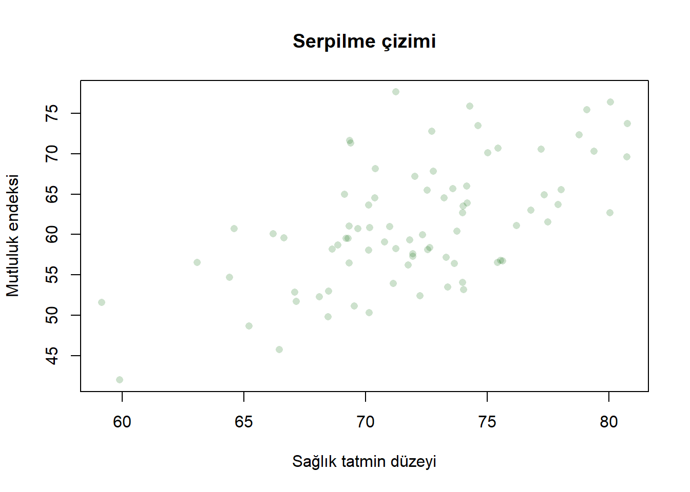
Bu sonuçlara göre sağlık tatmin düzeyi ile mutluluk arasında orta düzeyde pozitif bir doğrusal ilişki vardır (korelasyon yaklaşık 0.6). Serpilme çiziminden de görüldüğü gibi sağlık tatmin düzeyi arttıkça mutluluk düzeyi de artmaktadır.
İl düzeyinde mutluluk düzeyi, o ilde yaşayan bireylerin ortalama sağlık tatminleri, ve sosyal hayat tatmin düzeyleriyle de ilişkilidir. Bunu göstermek için aşağıdaki gibi korelasyon matrisi oluşturabiliriz:
Bu matrisin hücreleri o satır ve sütundaki değişkenler arasındaki korelasyon katsayısını göstermektedir (ana köşegen her zaman 1 olur). Buna göre sosyal hayat tatmin düzeyi ile mutluluk endeksi arasındak korelasyon katsayısı 0.68’dir. Bu değişkenler arasında serpilme çizimlerini de plot() fonksiyonu ile oluşturabiliriz:
plot(mutluluk[,c(15,41,42)])
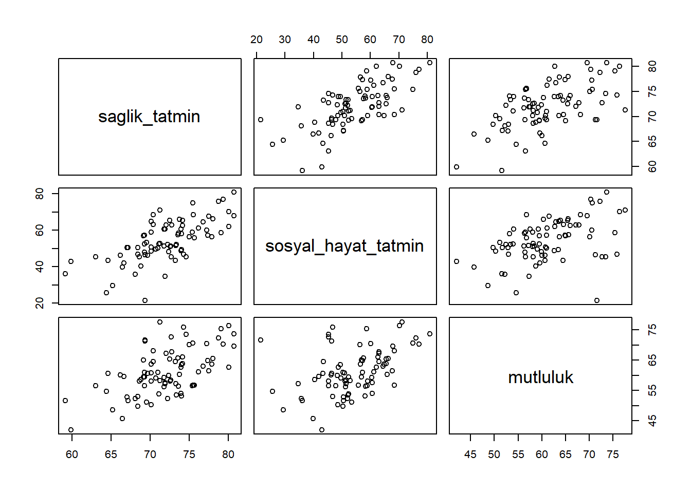
Alıştırma 3.6 Bu alıştırmada verileri görselleştirmenin önemini vurgulamak amacıyla geliştirilmiş datasauRus veri kümesini inceleyeceğiz. Önce veri kümesini yükleyin:
Her bir çift için korelasyon katsayısı yaklaşık -0.06’dır. Neredeyse sıfır korelasyon değeri, değişkenler arasında hiç bir ilişki olmadığı anlamına gelmez. Serpilme çizimlerinden de görüldüğü gibi ilişkilerin şekli belirgin biçimde farklıdır. Anscombe Dörtlüsünde olduğu gibi, Datasaraus veri kümesi de korelasyon katsayısının tek başına verilerin tüm özelliklerini yansıtmakta yetersiz kalabileceğini göstermektedir.
3.12 Problemler
Problem 3.1 Aşağıdaki soruları yanıtlayın.
Merkezi eğilim ölçülerini sıralayın ve kısaca açıklayın. Hangi durumda medyan tercih edilir?
Hangi tür verileri için geometrik ortalama uygun olabilir?
Bir firmanın satışları 4 yıllık bir dönemde %40 büyümüştür. Yıllık ortalama büyüme yüzde kaçtır?
“Aralık, uç değerlerden etkilenmeyen bir değişkenlik ölçüsüdür” Bu ifadeye katılır mısınız? Kısaca açıklayın.
Değişkenlik ölçüleri nelerdir? Kısaca açıklayın.
Problem 3.2 Büyük bir toplulukta IQ skorları ortalaması 100 standart sapması 10 olan bir dağılıma uymaktadır.
Çan biçimli bir dağılım varsayımı altında, gözlemlerin %95’inin içinde yer alacağı bir aralık oluşturun.
Dağılımın şeklinin bilinmediğini düşünelim. Gözlemlerin yüzde kaçı 1 ve 2 standart sapma içinde yer alır?
Problem 3.3 Aşağıdaki tablonun sütunlarındaki her değişken için ortalama, medyan, mod, standart sapma, IQR, ve varyasyon katsayısını bulun.
X
Y
Z
A
B
C
D
0
5
-3
24
5
124
55
1
3
-2
30
5
85
64
0
0
-1
12
5
102
72
0
6
0
7
5
156
75
1
10
1
15
3
133
78
1
1
2
28
1
115
85
Problem 3.4 Aşağıdaki veri kümesini düşünelim: \[
(51, 42, 51, 56, 54, 58, 49, 60, 52, 55, 52, 51, 49, 42, 44, 54, 50, 46, 53, 50, 47, 52, 49, 50, 49)
\] Bilgisayar kullanmadan:
Dal-ve-yaprak çizimini oluşturun.
5-sayı özet istatistiklerini hesaplayın.
Kutu grafiğini çizin.
4 ya da 5 sınıftan oluşan frekans tablosunu hazırlayın ve histogramını çizin.
Problem 3.5 Aşağıdaki ifadelerin doğru/yanlış olup olmadıklarını belirtin ve kısaca açıklayın.
Medyan ortalamaya göre uç değerlere daha az duyarlıdır.
IQR aralığa kıyasla uç değerlere daha az duyarlıdır.
Kovaryans her zaman -1 ile 1 arasında değerler alır.
Korelasyon katsayısının 0.9 olması iki değişken güçlü pozitif doğrusal ilişki olduğu anlamına gelir.
Kutu grafiği dağılımın modalliği (tepe sayısı) hakkında bilgi vermez.
Problem 3.6 Çok sayıda öğrencinin katıldığı bir sınavın sonucuna ilişkin aşağıdaki yorumlar yapılıyor:
Öğrencilerin %70’i ortalamadan yüksek not almış.
Öğrencilerin %70’i medyandan yüksek not almış.
Öğrencilerin %60’ı medyandan düşük not almış.
Bu ifadelerden hangileri kesin olarak yanlıştır? Kısaca açıklayınız.
Problem 3.7 Ortalaması 10 standart sapması 2 olan 5 sayı oluşturun (bilgisayar kullanmayın).
Problem 3.8 gapminder verilerini kullanarak aşağıdaki soruları yanıtlayınız:
Doğumdaki yaşam beklentisi, lifeExp, değişkeninin 1952 yılı için histogramını çizin.
Aynı değişkenin 2007 yılındaki histogramını da çizin ve karşılaştırın.
Problem 3.9 hane_ornek.RData verilerini kullanarak aşağıdaki soruları yanıtlayınız:
sigara hanede sigara içen varsa 1, yoksa 2 değerini alan bir kategorik değişkendir. Bunu kullanarak bir faktör değişkeni oluşturun. Hanelerin yüzde kaçında sigara içilmektedir?
Sigara içilen ve içilmeyen gruplar için ayrı ayrı özet istatistikleri oluşturun ve kutu grafiklerini çizin. Ortalama ve medyanı kullanarak bu iki grup arasında önemli farklar olup olmadığını tartışın.
ozel_sigorta değişkeni hanehalkının özel sigortası varsa 1 yoksa 2 değerini almaktadır. Hanelerin ne kadarının özel sigortası vardır?
Özel sigortası olan ve olmayan hanelerde aylık gelir ve harcamanın özet istatistiklerini oluşturun, histogramlarını çizin ve yorumlayın.
Problem 3.10 mutluluk.RData verilerini kullanarak aşağıdaki soruları yanıtlayınız:
ort_gun_kazanc o ilde yaşayan bireylerin ortalama günlük kazançlarını göstermektedir. Bu değişkenin histogramını ve kutu grafiğini çizin. Özet istatistikleri hesaplayın ve grafiklerle birlikte yorumlayın.
mutluluk endeksi ile ort_gun_kazanc arasındaki korelasyon katsayısını bulun. Serpilme diagramını çizin ve yorumlayın.
Bu iki değişkenin varyasyon katsayılarını (CV) hesaplayın ve yorumlayın.
Problem 3.11 body.RData vücut ölçümleri veri kümesini kullanarak aşağıdaki soruları yanıtlayınız:
height (boy) değişkeninin kadın ve erkekler için ayrı ayrı kutu çizimlerini oluşturun ve özet istatistiklerle birlikte yorumlayın.
height ve weight değişkenlerinin serpilme çizimlerini oluşturun. Cinsiyete göre noktaları ayrıştırın (renk ya da geometrik şekil kullanılabilir, erkekler için kırmızı, kadınlar için mavi vb.).